library(tidyverse)
library(mosaic)
library(skimr)
library(ggformula)
##
library(broom) # for clean stat outputs
library(sf) # for Panel-C
library(rnaturalearth) # for Panel-C
library(leaflet) # for Panel-D
library(readxl) # for Hunch 6
library(janitor) # for Hunch 3 and Hunch 6
# vcd and supernova must be installed, but we do NOT load them with library().
# We always write vcd::mosaic() and supernova::supernova(), so vcd's mosaic()
# never fights with the mosaic package.
A <- read_csv("data/panel-A.csv")
B <- read_csv("data/panel-B.csv")
C <- read_csv("data2/panel-C.csv")FOSEDA
Studio wall
Spine
Who arrives in acute coronary crisis, which habits travel with that crisis, and where in Africa is life short?
This sentence stays at the top. Every panel must attach to it.
Introduction — the tables we own
This folder is ours for the ten days. Our tables, our shapes.
- Panel A (
panel-A.csv) — acute coronary syndrome patients: age, BMI, cholesterol (TC, LDLC, HDLC) and EF, plus sex and obesity. - Panel B (
panel-B.csv) — same patients, Quals: smoking, sex, DM, HBP, Dx, cardiogenic shock. - Panel C (
panel-C.csv) — gapminder 2007. Join by country name. - Panel D — Erin Brockovich in Hinkley: a hand-built plume and family homes.
- Panel E — Found Data: six campus hunches we collected ourselves (AI belief, allowance, MBTI, relationships, tattoos, TV shows).
Found tables train the mark. A campus Free Hunch is a made panel of the same pair type.
Panel A — body / measure
age, BMI, TC, LDLC, HDLC and EF are Quant. sex and obesity are Quals for split.
1. See the table
What is a case? Which columns are Quant / Qual? What is missing?
# glimpse() / inspect() / skim()
dplyr::glimpse(A)Rows: 857
Columns: 11
$ age <dbl> 62, 78, 76, 89, 56, 73, 58, 62, 59, 71, 52, 52, 66, 64, 62, 42…
$ sex <chr> "Male", "Female", "Female", "Female", "Male", "Female", "Male"…
$ height <dbl> 168, 148, NA, 165, 162, 153, 167, 160, 152, 168, 175, 156, 164…
$ weight <dbl> 72, 48, NA, 50, 64, 59, 78, 50, 67, 60, 60, 63, 64, 51, 49, NA…
$ BMI <dbl> 25.51020, 21.91381, NA, 18.36547, 24.38653, 25.20398, 27.96802…
$ EF <dbl> 18.0, 18.4, 20.0, 21.8, 21.8, 22.0, 24.7, 26.6, 28.5, 31.1, 31…
$ TC <dbl> 215, NA, NA, 121, 195, 184, 161, 136, 239, 169, 272, 184, 239,…
$ LDLC <dbl> 154, NA, NA, 73, 151, 112, 91, 88, 161, 88, 212, 123, 150, 94,…
$ HDLC <dbl> 35, NA, NA, 20, 36, 38, 34, 33, 34, 54, 32, 43, 42, 46, 31, 60…
$ TG <dbl> 155, 166, NA, 89, 63, 137, 196, 30, 118, 141, 52, 72, 156, 120…
$ obesity <chr> "Yes", "No", "No", "No", "No", "Yes", "Yes", "No", "Yes", "No"…My Panel-A data has:
- ___ observations and 8 variables. (fill in the rows from
glimpse()) Each row (case) is one patient. age: Quantitative, numericBMI: Quantitative, numericTC: Quantitative, numeric (total cholesterol)LDLC: Quantitative, numeric (“bad” cholesterol)HDLC: Quantitative, numeric (“good” cholesterol)EF: Quantitative, numeric (ejection fraction)sex: Qualitative, categorical. Encoded, to be mutated obesity: Qualitative, categorical. Encoded, to be mutated
# glimpse() / inspect() / skim()
skimr::skim(A)| Name | A |
| Number of rows | 857 |
| Number of columns | 11 |
| _______________________ | |
| Column type frequency: | |
| character | 2 |
| numeric | 9 |
| ________________________ | |
| Group variables | None |
Variable type: character
| skim_variable | n_missing | complete_rate | min | max | empty | n_unique | whitespace |
|---|---|---|---|---|---|---|---|
| sex | 0 | 1 | 4 | 6 | 0 | 2 | 0 |
| obesity | 0 | 1 | 2 | 3 | 0 | 2 | 0 |
Variable type: numeric
| skim_variable | n_missing | complete_rate | mean | sd | p0 | p25 | p50 | p75 | p100 | hist |
|---|---|---|---|---|---|---|---|---|---|---|
| age | 0 | 1.00 | 63.31 | 11.70 | 28.00 | 55.00 | 64.00 | 72.00 | 91.00 | ▁▅▇▇▂ |
| height | 93 | 0.89 | 163.18 | 9.08 | 130.00 | 158.00 | 165.00 | 170.00 | 185.00 | ▁▂▆▇▂ |
| weight | 91 | 0.89 | 64.84 | 11.36 | 30.00 | 58.00 | 65.00 | 72.00 | 112.00 | ▁▆▇▂▁ |
| BMI | 93 | 0.89 | 24.28 | 3.35 | 15.62 | 22.13 | 24.16 | 26.17 | 41.42 | ▂▇▃▁▁ |
| EF | 134 | 0.84 | 55.83 | 9.62 | 18.00 | 50.45 | 58.10 | 62.35 | 79.00 | ▁▁▃▇▁ |
| TC | 23 | 0.97 | 185.20 | 47.77 | 25.00 | 154.00 | 183.00 | 213.00 | 493.00 | ▁▇▃▁▁ |
| LDLC | 24 | 0.97 | 116.58 | 41.09 | 15.00 | 88.00 | 114.00 | 141.00 | 366.00 | ▃▇▂▁▁ |
| HDLC | 23 | 0.97 | 38.24 | 11.09 | 4.00 | 32.00 | 38.00 | 45.00 | 89.00 | ▁▇▆▁▁ |
| TG | 15 | 0.98 | 125.24 | 90.85 | 11.00 | 68.00 | 105.50 | 154.00 | 877.00 | ▇▁▁▁▁ |
Furthermore, on the Qual variables panel-A data has :
sexhas 2 levels: “Female” and “Male”obesityhas 2 levels: “No” and “Yes”
And on the Quant variables panel-A data has :
agehas a mean of , sd of , median of , min of , and max of ___ (fill in fromskim())BMIhas a mean of , sd of , median of , min of , and max of ___TC,LDLC,HDLCandEF: (fill in fromskim())
Missing data? (fill in from the n_missing column of skim(). BMI, the cholesterol columns and EF may have gaps, which is why we use na.rm = TRUE below.)
A_mod <- A |>
mutate(sex = as.factor(sex), obesity = as.factor(obesity))
glimpse(A_mod)Rows: 857
Columns: 11
$ age <dbl> 62, 78, 76, 89, 56, 73, 58, 62, 59, 71, 52, 52, 66, 64, 62, 42…
$ sex <fct> Male, Female, Female, Female, Male, Female, Male, Male, Female…
$ height <dbl> 168, 148, NA, 165, 162, 153, 167, 160, 152, 168, 175, 156, 164…
$ weight <dbl> 72, 48, NA, 50, 64, 59, 78, 50, 67, 60, 60, 63, 64, 51, 49, NA…
$ BMI <dbl> 25.51020, 21.91381, NA, 18.36547, 24.38653, 25.20398, 27.96802…
$ EF <dbl> 18.0, 18.4, 20.0, 21.8, 21.8, 22.0, 24.7, 26.6, 28.5, 31.1, 31…
$ TC <dbl> 215, NA, NA, 121, 195, 184, 161, 136, 239, 169, 272, 184, 239,…
$ LDLC <dbl> 154, NA, NA, 73, 151, 112, 91, 88, 161, 88, 212, 123, 150, 94,…
$ HDLC <dbl> 35, NA, NA, 20, 36, 38, 34, 33, 34, 54, 32, 43, 42, 46, 31, 60…
$ TG <dbl> 155, 166, NA, 89, 63, 137, 196, 30, 118, 141, 52, 72, 156, 120…
$ obesity <fct> Yes, No, No, No, No, Yes, Yes, No, Yes, No, No, Yes, No, No, N…All ready now.
2. Ask
One question this table can answer. One it cannot. Write both.
Looking at the overall Spine statement, I can pose the following Questions:
Possibly can answer:
- Are people with more
BMIprone to becoming obese? - Is
obesityimpacted byage? (Main Character Question) - Is the
ageandobesitypattern different for men and women? - Is
TCassociated withLDLC? - Does cholesterol (
TC) increase withage? - How do
HDLCandLDLCvary in the population?
Possibly cannot answer:
- Does
EFincrease or decrease withBMI? (The data doesn’t show the relation betweenEFandBMIproperly) - How much fat can a person with a given
HDLCeat and keep a stableEF? (No diet data) - Does more workout lead to increased
EF? (No exercise data) - How many people whose
EFchanged withLDLChave died? (No follow-up or death data)
3. Choose a mark
Geom, map mark, or (later) test that matches the pair type. Name it before you code.
- Box plot + Stat Test For Means
- Histograms, coloured by
obesity+ Stat Test For Means - Box plot, coloured by
sex - Scatter Plot + Correlation Test
- Scatter Plot, coloured by
sex+ Correlation Test - Histograms
4. Predict
What do we think we will see? One sentence, before Run.
- I think obese patients will have a much higher
BMI. - I think obese patients will be younger on average than non-obese patients.
- I think the pattern will look similar for men and women.
- I think
TCandLDLCwill be strongly positively correlated, sinceLDLCis part ofTC. - I think
TCwill go up a little withage. - I think
LDLCwill be spread much wider thanHDLC.
5. Make
Human brick first. Optional: one AI prompt, pasted below, only for what section 3 named.
These first few charts are what I want to check out. I may/will not have these charts in the final rendered Quarto, but want to comment on findings if needed.
If any chart is surprising, it stays.
## Question 1, ggplot version
A_mod |> ggplot(aes(x = obesity, y = BMI, fill = obesity)) + geom_boxplot(color = "black")
## Question 2, ggplot version
A_mod |> ggplot(aes(x = age, fill = obesity)) + geom_histogram(binwidth = 5, position = "dodge", color = "black")
## Cannot-answer Question 1
A_mod |> ggplot(aes(x = BMI, y = EF)) + geom_point() + geom_smooth(method = "lm", se = FALSE)
## Question 6, against age
A_mod |> ggplot(aes(x = age, y = HDLC)) + geom_point(alpha = 0.3) + geom_smooth()
A_mod |> ggplot(aes(x = age, y = LDLC)) + geom_point(alpha = 0.3) + geom_smooth()## Question 1
A_mod |> gf_boxplot(BMI ~ obesity, fill = ~ obesity, title = "Are people with more BMI prone to becoming obese?")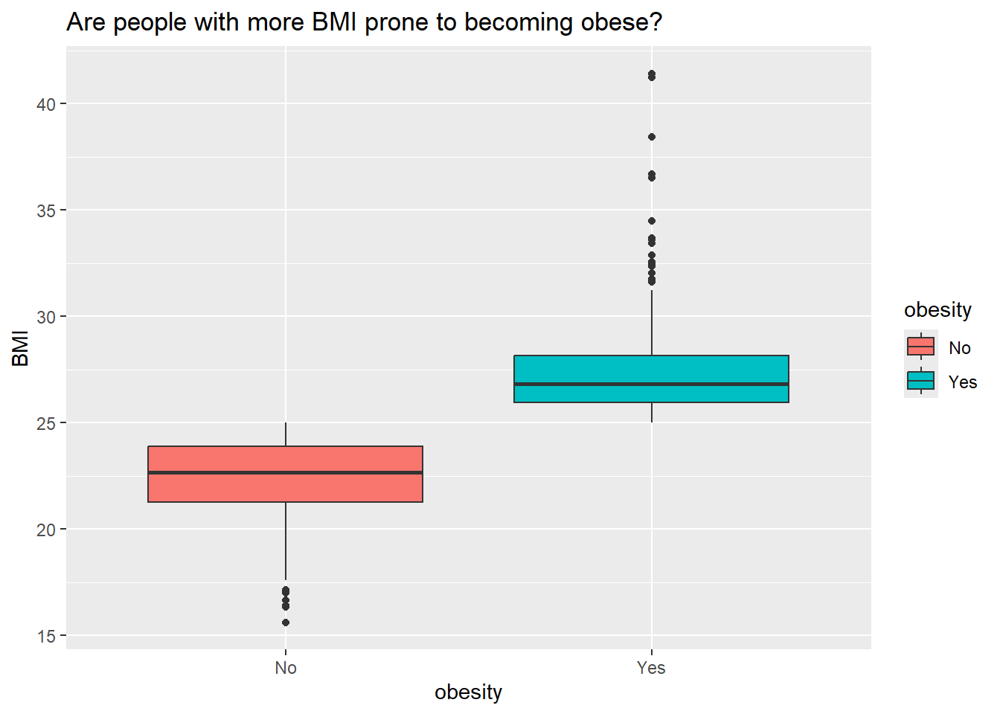
A_mod |> group_by(obesity) |> summarise(mean_BMI = mean(BMI, na.rm = TRUE))# A tibble: 2 × 2
obesity mean_BMI
<fct> <dbl>
1 No 22.3
2 Yes 27.5mosaic::t_test(BMI ~ obesity, data = A_mod) |> broom::tidy()# A tibble: 1 × 10
estimate estimate1 estimate2 statistic p.value parameter conf.low conf.high
<dbl> <dbl> <dbl> <dbl> <dbl> <dbl> <dbl> <dbl>
1 -5.24 22.3 27.5 -30.7 1.20e-118 517. -5.57 -4.90
# ℹ 2 more variables: method <chr>, alternative <chr>## Question 2 (Main Character)
A_mod |> gf_histogram(~ age, fill = ~ obesity, color = "black", title = "Is obesity impacted by age?")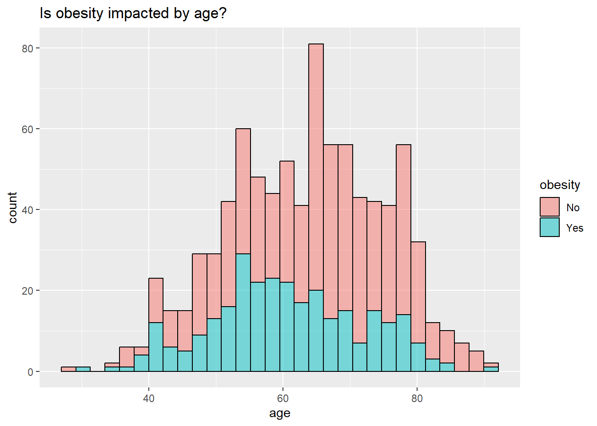
A_mod |> group_by(obesity) |> summarise(mean_age = mean(age, na.rm = TRUE))# A tibble: 2 × 2
obesity mean_age
<fct> <dbl>
1 No 64.7
2 Yes 60.6# Main Character Question
mosaic::t_test(age ~ obesity, data = A_mod) |> broom::tidy()# A tibble: 1 × 10
estimate estimate1 estimate2 statistic p.value parameter conf.low conf.high
<dbl> <dbl> <dbl> <dbl> <dbl> <dbl> <dbl> <dbl>
1 4.14 64.7 60.6 5.03 6.57e-7 601. 2.52 5.76
# ℹ 2 more variables: method <chr>, alternative <chr>## Question 3
A_mod |> gf_boxplot(age ~ obesity, color = ~ sex, title = "Is the age and obesity pattern different for men and women?")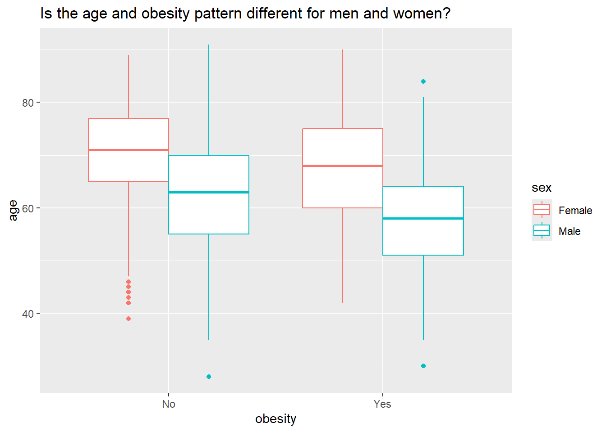
## Question 4
A_mod |> gf_point(LDLC ~ TC, alpha = 0.3, title = "Is TC associated with LDLC?") |>
gf_smooth(method = "lm")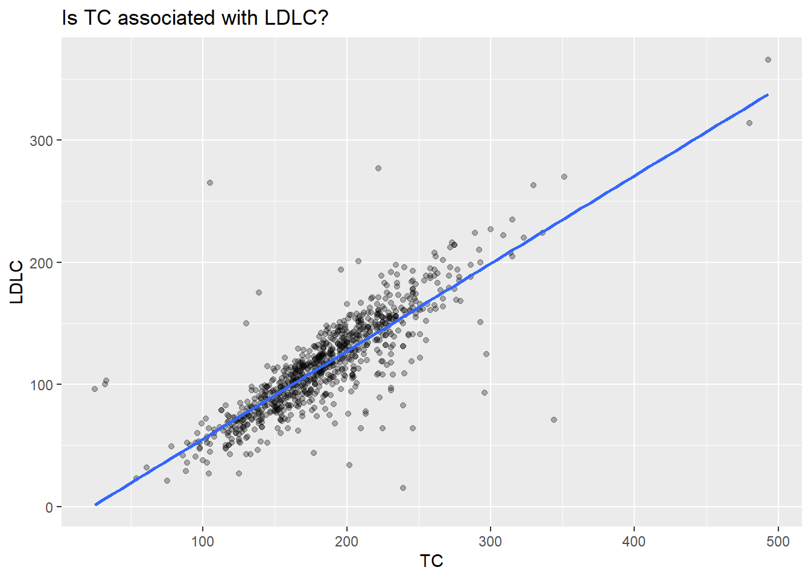
mosaic::cor.test(LDLC ~ TC, data = A_mod) |> broom::tidy()# A tibble: 1 × 8
estimate statistic p.value parameter conf.low conf.high method alternative
<dbl> <dbl> <dbl> <int> <dbl> <dbl> <chr> <chr>
1 0.835 43.8 4.45e-218 831 0.814 0.855 Pearson… two.sided ## Question 5
A_mod |> gf_point(TC ~ age, color = ~ sex, alpha = 0.3, title = "Does cholesterol increase with age?") |>
gf_smooth(method = "lm", se = FALSE)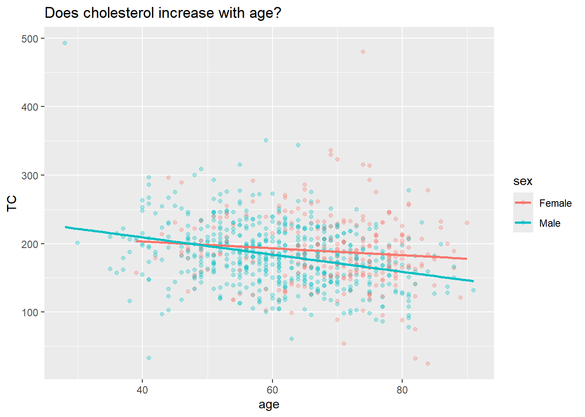
mosaic::cor.test(TC ~ age, data = A_mod) |> broom::tidy()# A tibble: 1 × 8
estimate statistic p.value parameter conf.low conf.high method alternative
<dbl> <dbl> <dbl> <int> <dbl> <dbl> <chr> <chr>
1 -0.205 -6.06 2.12e-9 832 -0.270 -0.140 Pears… two.sided ## Question 6
A_mod |> gf_histogram(~ HDLC, title = "How does HDLC vary in the population?")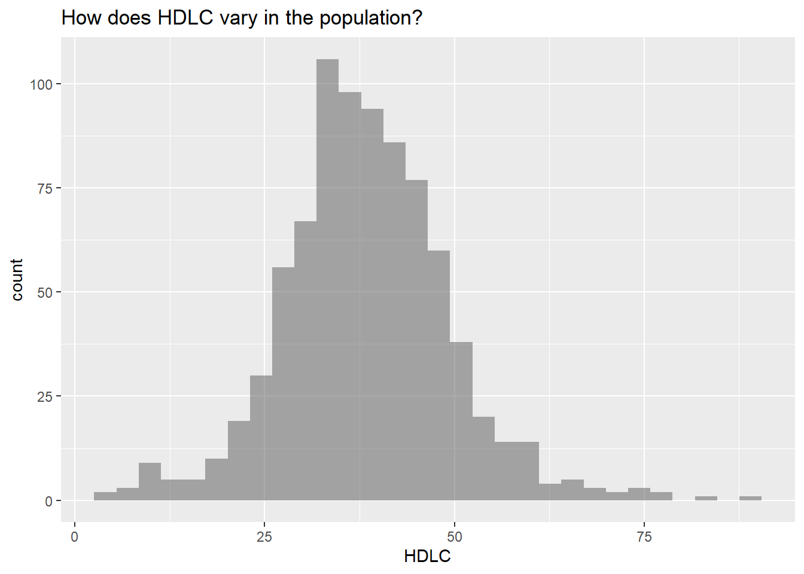
A_mod |> gf_histogram(~ LDLC, title = "How does LDLC vary in the population?")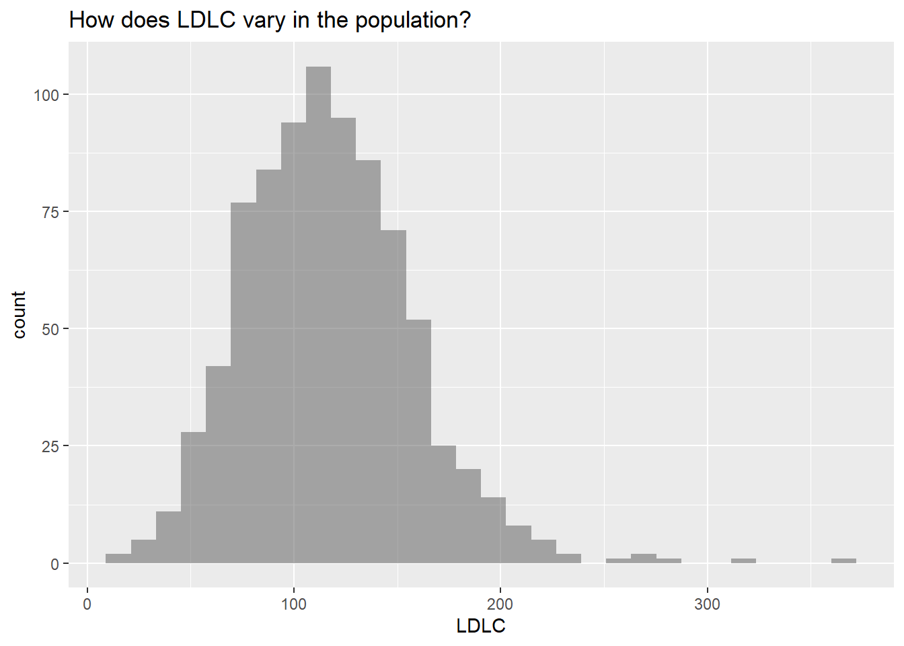
6. Say
Caption + one sentence we will stand behind.
- Obese patients have a clearly higher
BMI(mean ___ vs , p-value ). No surprise, sinceobesityis decided fromBMIin the first place. (fill in from the Question 1 output) - The mean
ageof obese and non-obese patients differs by ___ years (p-value ___). (fill in from the t-test table: if p < 0.05 the difference is significant, if not,agedoes not clearly changeobesity) - The age and obesity pattern looks ___ for men and women. (fill in from the Question 3 box plot)
TCandLDLCare positively correlated (r = , p-value ). (fill in from the Question 4 output)TC___ withage(r = , p-value ). (fill in from the Question 5 output)HDLCis ___ andLDLCis ___. (fill in the shape and spread from the Question 6 histograms)
7. Limit
What this panel cannot do.
- It cannot say why people become obese or why cholesterol rises (no diet, exercise or family history data).
- It only has patients who already arrived in acute coronary crisis, so it cannot speak for healthy people.
- It is one snapshot, so it cannot show change over TIME.
- Correlation is not causation:
TCandLDLCmoving together does not mean one causes the other.
Panel B — category / talk
smoking × sex, DM × HBP, Dx × cardiogenicShock. Do not histogram smoking.
1. See the table
What is a case? Which columns are Quant / Qual? What is missing?
# glimpse() / inspect() / skim()
dplyr::glimpse(B)Rows: 857
Columns: 8
$ sex <chr> "Male", "Female", "Female", "Female", "Male", "Female…
$ cardiogenicShock <chr> "No", "No", "Yes", "No", "No", "No", "No", "No", "No"…
$ entry <chr> "Femoral", "Femoral", "Femoral", "Femoral", "Radial",…
$ Dx <chr> "STEMI", "STEMI", "STEMI", "STEMI", "NSTEMI", "Unstab…
$ obesity <chr> "Yes", "No", "No", "No", "No", "Yes", "Yes", "No", "Y…
$ DM <chr> "Yes", "No", "No", "No", "Yes", "Yes", "Yes", "Yes", …
$ HBP <chr> "No", "Yes", "Yes", "No", "Yes", "Yes", "Yes", "Yes",…
$ smoking <chr> "Smoker", "Never", "Never", "Never", "Smoker", "Never…My Panel-B data has:
- ___ observations and ___ variables. (fill in from
glimpse()) Each row (case) is one patient. sex: Qualitative, categorical. Encoded, to be mutated obesity: Qualitative, categorical. Encoded, to be mutated smoking: Qualitative, categorical. Encoded, to be mutated Dx: Qualitative, categorical. Encoded, to be mutated cardiogenicShock: Qualitative, categorical. Encoded, to be mutated entry: Qualitative, categorical. Encoded, to be mutated DM,HBP: Qualitative, categorical. Encoded, to be mutated (check glimpse()for any other columns)
# glimpse() / inspect() / skim()
skimr::skim(B)| Name | B |
| Number of rows | 857 |
| Number of columns | 8 |
| _______________________ | |
| Column type frequency: | |
| character | 8 |
| ________________________ | |
| Group variables | None |
Variable type: character
| skim_variable | n_missing | complete_rate | min | max | empty | n_unique | whitespace |
|---|---|---|---|---|---|---|---|
| sex | 0 | 1 | 4 | 6 | 0 | 2 | 0 |
| cardiogenicShock | 0 | 1 | 2 | 3 | 0 | 2 | 0 |
| entry | 0 | 1 | 6 | 7 | 0 | 2 | 0 |
| Dx | 0 | 1 | 5 | 15 | 0 | 3 | 0 |
| obesity | 0 | 1 | 2 | 3 | 0 | 2 | 0 |
| DM | 0 | 1 | 2 | 3 | 0 | 2 | 0 |
| HBP | 0 | 1 | 2 | 3 | 0 | 2 | 0 |
| smoking | 0 | 1 | 5 | 9 | 0 | 3 | 0 |
Further, on the Qual variables panel-B data has :
sexhas 2 levels: “Female” and “Male”obesityhas 2 levels: “No” and “Yes”smokinghas 3 levels: ___ (fill in fromskim())Dxhas 3 levels: “STEMI”, “NSTEMI” and “Unstable Angina”cardiogenicShockhas 2 levels: “No” and “Yes”entryhas 2 levels: “Femoral” and “Radial”
And on the Quant variables panel-B data has : None. All variables are Qualitative only.
Missing data? (fill in from the n_missing column of skim())
B_mod <- B |>
mutate(across(where(is.character), as.factor)) # Whoa!!
glimpse(B_mod)Rows: 857
Columns: 8
$ sex <fct> Male, Female, Female, Female, Male, Female, Male, Mal…
$ cardiogenicShock <fct> No, No, Yes, No, No, No, No, No, No, No, No, No, No, …
$ entry <fct> Femoral, Femoral, Femoral, Femoral, Radial, Radial, R…
$ Dx <fct> STEMI, STEMI, STEMI, STEMI, NSTEMI, Unstable Angina, …
$ obesity <fct> Yes, No, No, No, No, Yes, Yes, No, Yes, No, No, Yes, …
$ DM <fct> Yes, No, No, No, Yes, Yes, Yes, Yes, Yes, Yes, Yes, Y…
$ HBP <fct> No, Yes, Yes, No, Yes, Yes, Yes, Yes, Yes, No, No, Ye…
$ smoking <fct> Smoker, Never, Never, Never, Smoker, Never, Ex-smoker…Now, we’re ready.
2. Ask
One question this table can answer. One it cannot. Write both.
Looking at the spine statement again, I can pose the following Questions:
Possibly can answer:
- Does
obesitydiffer between males and females, more than we would expect by chance? (Main Character Question) - Does
smokingstatus differ across STEMI, NSTEMI, and Unstable Angina patients? - Is
obesitydistributed differently across the different diagnosis (Dx) groups? - Is
cardiogenicShockmore common in certainDxgroups? - Does the type of
entry, Radial or Femoral, differ acrossDxgroups?
Possibly cannot answer:
- Does
smokingcause STEMI? (Patients were not assigned to smoke. This is not an RCT.) - How many cigarettes a day is risky? (No amount of smoking, only a category)
3. Choose a mark
Geom, map mark, or (later) test that matches the pair type. Name it before you code.
- Mosaic Chart + Chi-Square Test
- Bar Chart with fill, dodged
- Bar Chart with fill, as proportions
- Mosaic Chart
- Bar Chart with fill, dodged
4. Predict
What do we think we will see? One sentence, before Run.
- I think obesity will be about the same for men and women, so the chi-square test will not be significant.
- I think smokers will show up most among STEMI patients.
- I think obesity will look similar across the
Dxgroups. - I think cardiogenic shock will be most common in STEMI.
- I think
entrywill look similar across theDxgroups.
5. Make
Human brick first. Optional: one AI prompt, pasted below, only for what section 3 named.
# Question 1 (Main Character)
B_table <- vcd::structable(obesity ~ sex, data = B_mod)
B_table obesity No Yes
sex
Female 194 93
Male 373 197vcd::mosaic(B_table, shade = TRUE, main = "Does obesity differ between males and females?")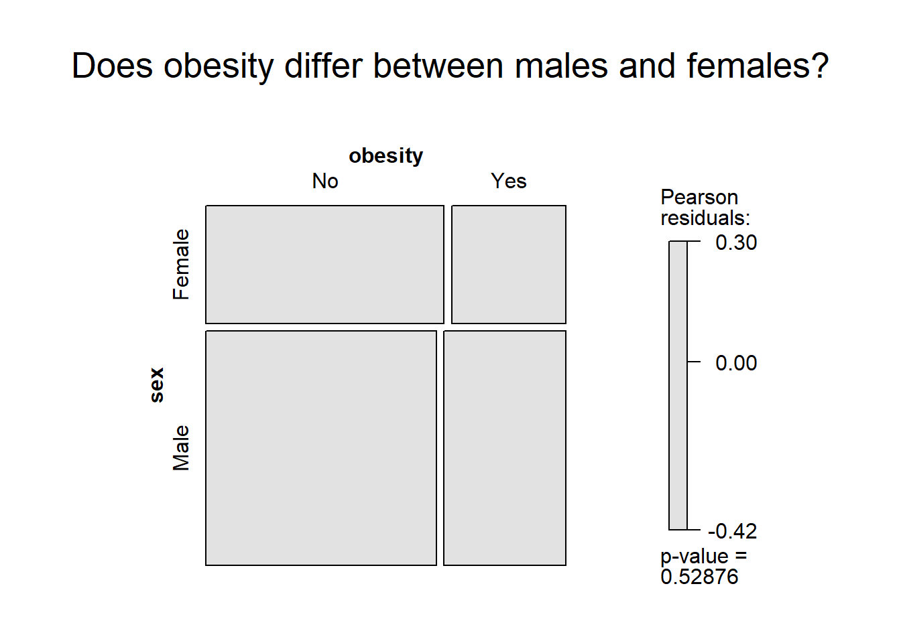
vcd::mosaic(B_table, type = "expected", main = "What would we expect by chance?")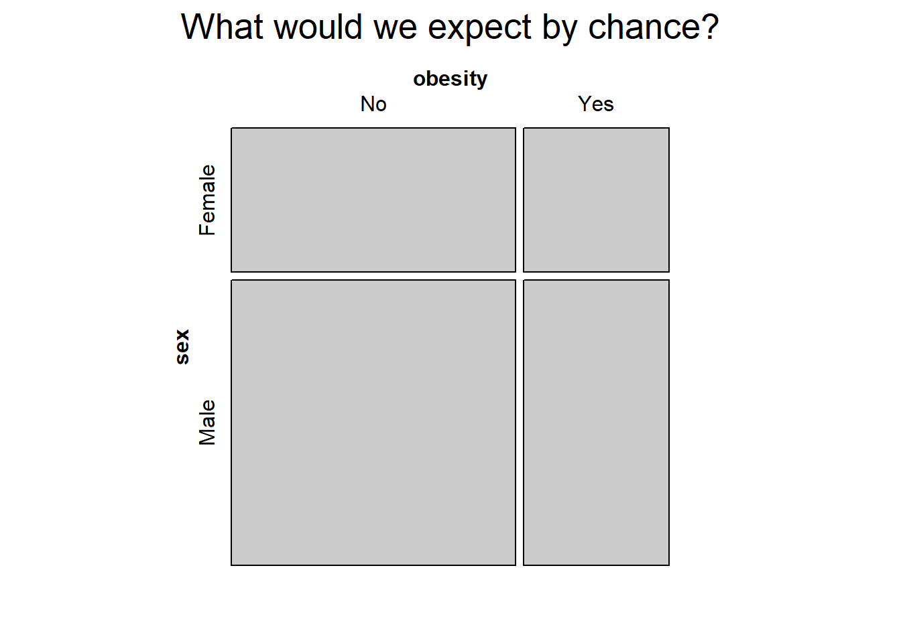
# Main Character Question
mosaic::xchisq.test(obesity ~ sex, data = B_mod)
Pearson's Chi-squared test with Yates' continuity correction
data: x
X-squared = 0.30627, df = 1, p-value = 0.58
194 373
(189.88) (377.12)
[0.069] [0.035]
< 0.30> <-0.21>
93 197
( 97.12) (192.88)
[0.135] [0.068]
<-0.42> < 0.30>
key:
observed
(expected)
[contribution to X-squared]
<Pearson residual># Question 2
B_mod |> gf_bar(~ Dx, fill = ~ smoking, position = "dodge", title = "Does smoking status differ across STEMI, NSTEMI, and Unstable Angina patients?")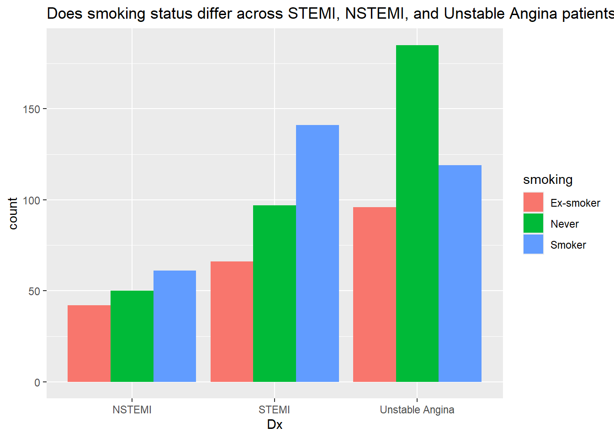
# Question 3
B_mod |> gf_bar(~ Dx, fill = ~ obesity, position = "fill", title = "Is obesity distributed differently across the diagnosis groups?")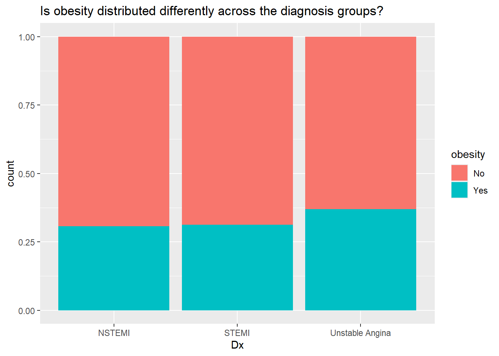
# Question 4
vcd::structable(cardiogenicShock ~ Dx, data = B_mod) |>
vcd::mosaic(shade = TRUE, main = "Is cardiogenic shock more common in certain diagnosis groups?")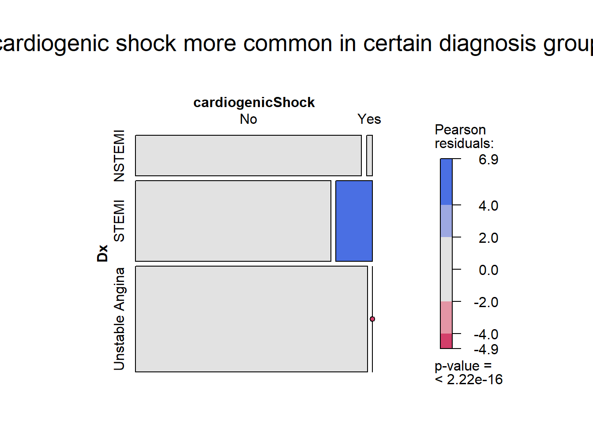
# Question 5
B_mod |> gf_bar(~ Dx, fill = ~ entry, position = "dodge", title = "Does the type of entry, Radial or Femoral, differ across diagnosis groups?")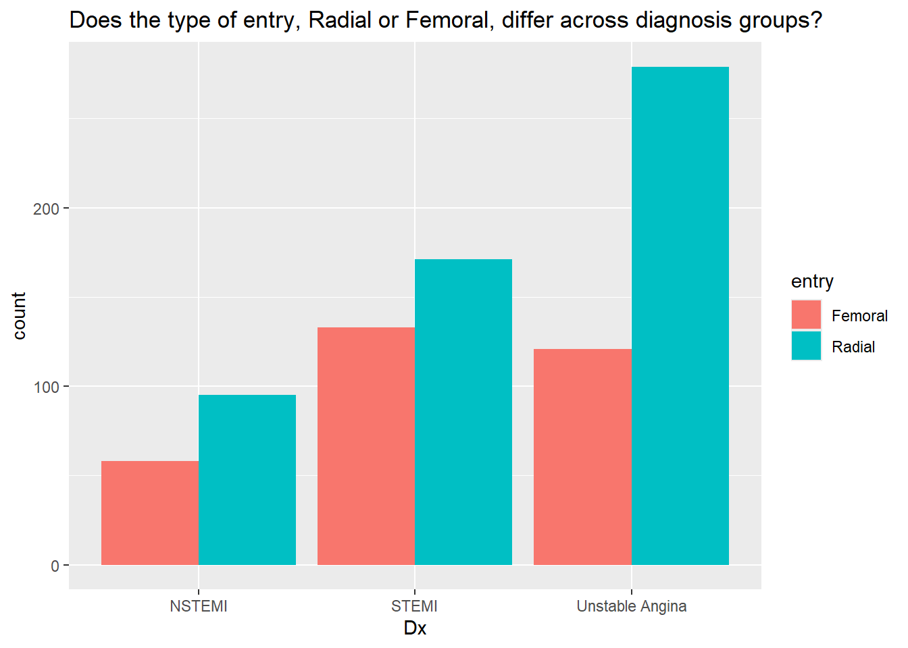
6. Say
Caption + one sentence we will stand behind.
- Obesity ___ differ between men and women (X-squared = , p-value ). (fill in from the chi-square output: if p < 0.05 it does differ, if not, it does not)
- Smokers are ___ among STEMI patients compared to NSTEMI and Unstable Angina. (fill in from the Question 2 bar chart)
- The share of obese patients looks ___ across the
Dxgroups. (fill in from the Question 3 bar chart) - Cardiogenic shock is most common in ___. (fill in from the coloured tiles in the Question 4 mosaic)
entrylooks ___ across theDxgroups. (fill in from the Question 5 bar chart)
7. Limit
What this panel cannot do.
- It cannot say that smoking or obesity causes a diagnosis. Nobody was assigned to smoke, so this is not an RCT.
- It only has patients who already arrived in acute coronary crisis, so it cannot speak for healthy people.
- It has categories only, so it cannot say how much smoking or weight is risky.
Panel C — place
lifeExp / gdpPercap / pop by country and continent. Same join brick as other map panels.
1. See the table
What is a case? Which columns are Quant / Qual? What is missing?
dplyr::glimpse(C)Rows: 142
Columns: 6
$ country <chr> "Afghanistan", "Albania", "Algeria", "Angola", "Argentina", …
$ continent <chr> "Asia", "Europe", "Africa", "Africa", "Americas", "Oceania",…
$ year <dbl> 2007, 2007, 2007, 2007, 2007, 2007, 2007, 2007, 2007, 2007, …
$ lifeExp <dbl> 43.828, 76.423, 72.301, 42.731, 75.320, 81.235, 79.829, 75.6…
$ pop <dbl> 31889923, 3600523, 33333216, 12420476, 40301927, 20434176, 8…
$ gdpPercap <dbl> 974.5803, 5937.0295, 6223.3675, 4797.2313, 12779.3796, 34435…My Panel-C data has:
- 25 rows and 6 columns. Each row (case) is one country of the Americas in 2007.
country: Qualitative, categorical. Encoded, to be mutated continent: Qualitative, categorical. Encoded, to be mutated year: Quantitative, numeric. It is 2007 all the way down, so the data is for one year only.lifeExp: Quantitative, numericpop: Quantitative, numericgdpPercap: Quantitative, numeric
Let us join this data with map geometries from rnaturalearth, so that we can make maps of the quant variables.
world <- rnaturalearth::ne_countries(scale = "medium", returnclass = "sf")
glimpse(world)Rows: 242
Columns: 169
$ featurecla <chr> "Admin-0 country", "Admin-0 country", "Admin-0 country", "A…
$ scalerank <int> 1, 1, 1, 3, 5, 6, 1, 1, 1, 3, 5, 3, 3, 3, 3, 1, 5, 3, 3, 3,…
$ labelrank <int> 3, 3, 3, 2, 3, 6, 4, 3, 4, 6, 6, 6, 6, 6, 4, 5, 2, 4, 5, 6,…
$ sovereignt <chr> "Zimbabwe", "Zambia", "Yemen", "Vietnam", "Venezuela", "Vat…
$ sov_a3 <chr> "ZWE", "ZMB", "YEM", "VNM", "VEN", "VAT", "VUT", "UZB", "UR…
$ adm0_dif <int> 0, 0, 0, 0, 0, 0, 0, 0, 0, 0, 0, 1, 1, 1, 1, 1, 1, 1, 1, 1,…
$ level <int> 2, 2, 2, 2, 2, 2, 2, 2, 2, 2, 2, 2, 2, 2, 2, 2, 2, 2, 2, 2,…
$ type <chr> "Sovereign country", "Sovereign country", "Sovereign countr…
$ tlc <chr> "1", "1", "1", "1", "1", "1", "1", "1", "1", "1", "1", "1",…
$ admin <chr> "Zimbabwe", "Zambia", "Yemen", "Vietnam", "Venezuela", "Vat…
$ adm0_a3 <chr> "ZWE", "ZMB", "YEM", "VNM", "VEN", "VAT", "VUT", "UZB", "UR…
$ geou_dif <int> 0, 0, 0, 0, 0, 0, 0, 0, 0, 0, 0, 0, 0, 0, 0, 0, 0, 0, 0, 0,…
$ geounit <chr> "Zimbabwe", "Zambia", "Yemen", "Vietnam", "Venezuela", "Vat…
$ gu_a3 <chr> "ZWE", "ZMB", "YEM", "VNM", "VEN", "VAT", "VUT", "UZB", "UR…
$ su_dif <int> 0, 0, 0, 0, 0, 0, 0, 0, 0, 0, 0, 0, 0, 0, 0, 0, 0, 0, 0, 0,…
$ subunit <chr> "Zimbabwe", "Zambia", "Yemen", "Vietnam", "Venezuela", "Vat…
$ su_a3 <chr> "ZWE", "ZMB", "YEM", "VNM", "VEN", "VAT", "VUT", "UZB", "UR…
$ brk_diff <int> 0, 0, 0, 0, 0, 0, 0, 0, 0, 0, 0, 0, 0, 0, 0, 0, 0, 0, 1, 0,…
$ name <chr> "Zimbabwe", "Zambia", "Yemen", "Vietnam", "Venezuela", "Vat…
$ name_long <chr> "Zimbabwe", "Zambia", "Yemen", "Vietnam", "Venezuela", "Vat…
$ brk_a3 <chr> "ZWE", "ZMB", "YEM", "VNM", "VEN", "VAT", "VUT", "UZB", "UR…
$ brk_name <chr> "Zimbabwe", "Zambia", "Yemen", "Vietnam", "Venezuela", "Vat…
$ brk_group <chr> NA, NA, NA, NA, NA, NA, NA, NA, NA, NA, NA, NA, NA, NA, NA,…
$ abbrev <chr> "Zimb.", "Zambia", "Yem.", "Viet.", "Ven.", "Vat.", "Van.",…
$ postal <chr> "ZW", "ZM", "YE", "VN", "VE", "V", "VU", "UZ", "UY", "FSM",…
$ formal_en <chr> "Republic of Zimbabwe", "Republic of Zambia", "Republic of …
$ formal_fr <chr> NA, NA, NA, NA, "República Bolivariana de Venezuela", NA, N…
$ name_ciawf <chr> "Zimbabwe", "Zambia", "Yemen", "Vietnam", "Venezuela", "Hol…
$ note_adm0 <chr> NA, NA, NA, NA, NA, NA, NA, NA, NA, NA, NA, "U.S.A.", "U.S.…
$ note_brk <chr> NA, NA, NA, NA, NA, NA, NA, NA, NA, NA, NA, NA, NA, NA, NA,…
$ name_sort <chr> "Zimbabwe", "Zambia", "Yemen, Rep.", "Vietnam", "Venezuela,…
$ name_alt <chr> NA, NA, NA, NA, NA, "Holy See", NA, NA, NA, NA, NA, NA, NA,…
$ mapcolor7 <int> 1, 5, 5, 5, 1, 1, 6, 2, 1, 5, 2, 4, 4, 4, 4, 4, 4, 6, 6, 6,…
$ mapcolor8 <int> 5, 8, 3, 6, 3, 3, 3, 3, 2, 2, 5, 5, 5, 5, 5, 5, 5, 6, 6, 6,…
$ mapcolor9 <int> 3, 5, 3, 5, 1, 4, 7, 5, 2, 4, 5, 1, 1, 1, 1, 1, 1, 6, 6, 6,…
$ mapcolor13 <int> 9, 13, 11, 4, 4, 2, 3, 4, 10, 13, 3, 1, 1, 1, 1, 1, 1, 3, 3…
$ pop_est <dbl> 14645468, 17861030, 29161922, 96462106, 28515829, 825, 2998…
$ pop_rank <int> 14, 14, 15, 16, 15, 2, 10, 15, 12, 9, 8, 8, 9, 9, 8, 12, 17…
$ pop_year <int> 2019, 2019, 2019, 2019, 2019, 2019, 2019, 2019, 2019, 2019,…
$ gdp_md <int> 21440, 23309, 22581, 261921, 482359, -99, 934, 57921, 56045…
$ gdp_year <int> 2019, 2019, 2019, 2019, 2014, 2019, 2019, 2019, 2019, 2018,…
$ economy <chr> "5. Emerging region: G20", "7. Least developed region", "7.…
$ income_grp <chr> "5. Low income", "4. Lower middle income", "4. Lower middle…
$ fips_10 <chr> "ZI", "ZA", "YM", "VM", "VE", "VT", "NH", "UZ", "UY", "FM",…
$ iso_a2 <chr> "ZW", "ZM", "YE", "VN", "VE", "VA", "VU", "UZ", "UY", "FM",…
$ iso_a2_eh <chr> "ZW", "ZM", "YE", "VN", "VE", "VA", "VU", "UZ", "UY", "FM",…
$ iso_a3 <chr> "ZWE", "ZMB", "YEM", "VNM", "VEN", "VAT", "VUT", "UZB", "UR…
$ iso_a3_eh <chr> "ZWE", "ZMB", "YEM", "VNM", "VEN", "VAT", "VUT", "UZB", "UR…
$ iso_n3 <chr> "716", "894", "887", "704", "862", "336", "548", "860", "85…
$ iso_n3_eh <chr> "716", "894", "887", "704", "862", "336", "548", "860", "85…
$ un_a3 <chr> "716", "894", "887", "704", "862", "336", "548", "860", "85…
$ wb_a2 <chr> "ZW", "ZM", "RY", "VN", "VE", "-99", "VU", "UZ", "UY", "FM"…
$ wb_a3 <chr> "ZWE", "ZMB", "YEM", "VNM", "VEN", "-99", "VUT", "UZB", "UR…
$ woe_id <int> 23425004, 23425003, 23425002, 23424984, 23424982, 23424986,…
$ woe_id_eh <int> 23425004, 23425003, 23425002, 23424984, 23424982, 23424986,…
$ woe_note <chr> "Exact WOE match as country", "Exact WOE match as country",…
$ adm0_iso <chr> "ZWE", "ZMB", "YEM", "VNM", "VEN", "VAT", "VUT", "UZB", "UR…
$ adm0_diff <chr> NA, NA, NA, NA, NA, NA, NA, NA, NA, NA, NA, NA, NA, NA, NA,…
$ adm0_tlc <chr> "ZWE", "ZMB", "YEM", "VNM", "VEN", "VAT", "VUT", "UZB", "UR…
$ adm0_a3_us <chr> "ZWE", "ZMB", "YEM", "VNM", "VEN", "VAT", "VUT", "UZB", "UR…
$ adm0_a3_fr <chr> "ZWE", "ZMB", "YEM", "VNM", "VEN", "VAT", "VUT", "UZB", "UR…
$ adm0_a3_ru <chr> "ZWE", "ZMB", "YEM", "VNM", "VEN", "VAT", "VUT", "UZB", "UR…
$ adm0_a3_es <chr> "ZWE", "ZMB", "YEM", "VNM", "VEN", "VAT", "VUT", "UZB", "UR…
$ adm0_a3_cn <chr> "ZWE", "ZMB", "YEM", "VNM", "VEN", "VAT", "VUT", "UZB", "UR…
$ adm0_a3_tw <chr> "ZWE", "ZMB", "YEM", "VNM", "VEN", "VAT", "VUT", "UZB", "UR…
$ adm0_a3_in <chr> "ZWE", "ZMB", "YEM", "VNM", "VEN", "VAT", "VUT", "UZB", "UR…
$ adm0_a3_np <chr> "ZWE", "ZMB", "YEM", "VNM", "VEN", "VAT", "VUT", "UZB", "UR…
$ adm0_a3_pk <chr> "ZWE", "ZMB", "YEM", "VNM", "VEN", "VAT", "VUT", "UZB", "UR…
$ adm0_a3_de <chr> "ZWE", "ZMB", "YEM", "VNM", "VEN", "VAT", "VUT", "UZB", "UR…
$ adm0_a3_gb <chr> "ZWE", "ZMB", "YEM", "VNM", "VEN", "VAT", "VUT", "UZB", "UR…
$ adm0_a3_br <chr> "ZWE", "ZMB", "YEM", "VNM", "VEN", "VAT", "VUT", "UZB", "UR…
$ adm0_a3_il <chr> "ZWE", "ZMB", "YEM", "VNM", "VEN", "VAT", "VUT", "UZB", "UR…
$ adm0_a3_ps <chr> "ZWE", "ZMB", "YEM", "VNM", "VEN", "VAT", "VUT", "UZB", "UR…
$ adm0_a3_sa <chr> "ZWE", "ZMB", "YEM", "VNM", "VEN", "VAT", "VUT", "UZB", "UR…
$ adm0_a3_eg <chr> "ZWE", "ZMB", "YEM", "VNM", "VEN", "VAT", "VUT", "UZB", "UR…
$ adm0_a3_ma <chr> "ZWE", "ZMB", "YEM", "VNM", "VEN", "VAT", "VUT", "UZB", "UR…
$ adm0_a3_pt <chr> "ZWE", "ZMB", "YEM", "VNM", "VEN", "VAT", "VUT", "UZB", "UR…
$ adm0_a3_ar <chr> "ZWE", "ZMB", "YEM", "VNM", "VEN", "VAT", "VUT", "UZB", "UR…
$ adm0_a3_jp <chr> "ZWE", "ZMB", "YEM", "VNM", "VEN", "VAT", "VUT", "UZB", "UR…
$ adm0_a3_ko <chr> "ZWE", "ZMB", "YEM", "VNM", "VEN", "VAT", "VUT", "UZB", "UR…
$ adm0_a3_vn <chr> "ZWE", "ZMB", "YEM", "VNM", "VEN", "VAT", "VUT", "UZB", "UR…
$ adm0_a3_tr <chr> "ZWE", "ZMB", "YEM", "VNM", "VEN", "VAT", "VUT", "UZB", "UR…
$ adm0_a3_id <chr> "ZWE", "ZMB", "YEM", "VNM", "VEN", "VAT", "VUT", "UZB", "UR…
$ adm0_a3_pl <chr> "ZWE", "ZMB", "YEM", "VNM", "VEN", "VAT", "VUT", "UZB", "UR…
$ adm0_a3_gr <chr> "ZWE", "ZMB", "YEM", "VNM", "VEN", "VAT", "VUT", "UZB", "UR…
$ adm0_a3_it <chr> "ZWE", "ZMB", "YEM", "VNM", "VEN", "VAT", "VUT", "UZB", "UR…
$ adm0_a3_nl <chr> "ZWE", "ZMB", "YEM", "VNM", "VEN", "VAT", "VUT", "UZB", "UR…
$ adm0_a3_se <chr> "ZWE", "ZMB", "YEM", "VNM", "VEN", "VAT", "VUT", "UZB", "UR…
$ adm0_a3_bd <chr> "ZWE", "ZMB", "YEM", "VNM", "VEN", "VAT", "VUT", "UZB", "UR…
$ adm0_a3_ua <chr> "ZWE", "ZMB", "YEM", "VNM", "VEN", "VAT", "VUT", "UZB", "UR…
$ adm0_a3_un <int> -99, -99, -99, -99, -99, -99, -99, -99, -99, -99, -99, -99,…
$ adm0_a3_wb <int> -99, -99, -99, -99, -99, -99, -99, -99, -99, -99, -99, -99,…
$ continent <chr> "Africa", "Africa", "Asia", "Asia", "South America", "Europ…
$ region_un <chr> "Africa", "Africa", "Asia", "Asia", "Americas", "Europe", "…
$ subregion <chr> "Eastern Africa", "Eastern Africa", "Western Asia", "South-…
$ region_wb <chr> "Sub-Saharan Africa", "Sub-Saharan Africa", "Middle East & …
$ name_len <int> 8, 6, 5, 7, 9, 7, 7, 10, 7, 10, 12, 14, 15, 4, 14, 11, 24, …
$ long_len <int> 8, 6, 5, 7, 9, 7, 7, 10, 7, 30, 16, 24, 28, 4, 14, 11, 13, …
$ abbrev_len <int> 5, 6, 4, 5, 4, 4, 4, 4, 4, 6, 6, 6, 11, 4, 9, 4, 6, 10, 6, …
$ tiny <int> -99, -99, -99, 2, -99, 4, 2, 5, -99, -99, 2, 3, 3, 2, 3, -9…
$ homepart <int> 1, 1, 1, 1, 1, 1, 1, 1, 1, 1, 1, -99, -99, -99, -99, -99, 1…
$ min_zoom <dbl> 0, 0, 0, 0, 0, 0, 0, 0, 0, 0, 0, 0, 0, 0, 0, 0, 0, 0, 0, 0,…
$ min_label <dbl> 2.5, 3.0, 3.0, 2.0, 2.5, 5.0, 4.0, 3.0, 3.0, 5.0, 5.0, 5.0,…
$ max_label <dbl> 8.0, 8.0, 8.0, 7.0, 7.5, 10.0, 9.0, 8.0, 8.0, 10.0, 10.0, 1…
$ label_x <dbl> 29.92544, 26.39530, 45.87438, 105.38729, -64.59938, 12.4534…
$ label_y <dbl> -18.911640, -14.660804, 15.328226, 21.715416, 7.182476, 41.…
$ ne_id <dbl> 1159321441, 1159321439, 1159321425, 1159321417, 1159321411,…
$ wikidataid <chr> "Q954", "Q953", "Q805", "Q881", "Q717", "Q237", "Q686", "Q2…
$ name_ar <chr> "زيمبابوي", "زامبيا", "اليمن", "فيتنام", "فنزويلا", "الفاتي…
$ name_bn <chr> "জিম্বাবুয়ে", "জাম্বিয়া", "ইয়েমেন", "ভিয়েতনাম", "ভেনেজুয়েলা", "ভ্যাটিকান সিটি", "ভানুয়াতু",…
$ name_de <chr> "Simbabwe", "Sambia", "Jemen", "Vietnam", "Venezuela", "Vat…
$ name_en <chr> "Zimbabwe", "Zambia", "Yemen", "Vietnam", "Venezuela", "Vat…
$ name_es <chr> "Zimbabue", "Zambia", "Yemen", "Vietnam", "Venezuela", "Ciu…
$ name_fa <chr> "زیمبابوه", "زامبیا", "یمن", "ویتنام", "ونزوئلا", "واتیکان"…
$ name_fr <chr> "Zimbabwe", "Zambie", "Yémen", "Viêt Nam", "Venezuela", "Ci…
$ name_el <chr> "Ζιμπάμπουε", "Ζάμπια", "Υεμένη", "Βιετνάμ", "Βενεζουέλα", …
$ name_he <chr> "זימבבואה", "זמביה", "תימן", "וייטנאם", "ונצואלה", "קריית ה…
$ name_hi <chr> "ज़िम्बाब्वे", "ज़ाम्बिया", "यमन", "वियतनाम", "वेनेज़ुएला", "वैटिकन नगर", "वानूआटू", …
$ name_hu <chr> "Zimbabwe", "Zambia", "Jemen", "Vietnám", "Venezuela", "Vat…
$ name_id <chr> "Zimbabwe", "Zambia", "Yaman", "Vietnam", "Venezuela", "Vat…
$ name_it <chr> "Zimbabwe", "Zambia", "Yemen", "Vietnam", "Venezuela", "Cit…
$ name_ja <chr> "ジンバブエ", "ザンビア", "イエメン", "ベトナム", "ベネズエラ", "バチカン", "バヌアツ", "…
$ name_ko <chr> "짐바브웨", "잠비아", "예멘", "베트남", "베네수엘라", "바티칸 시국", "바누아투", "우즈베…
$ name_nl <chr> "Zimbabwe", "Zambia", "Jemen", "Vietnam", "Venezuela", "Vat…
$ name_pl <chr> "Zimbabwe", "Zambia", "Jemen", "Wietnam", "Wenezuela", "Wat…
$ name_pt <chr> "Zimbábue", "Zâmbia", "Iémen", "Vietname", "Venezuela", "Va…
$ name_ru <chr> "Зимбабве", "Замбия", "Йемен", "Вьетнам", "Венесуэла", "Ват…
$ name_sv <chr> "Zimbabwe", "Zambia", "Jemen", "Vietnam", "Venezuela", "Vat…
$ name_tr <chr> "Zimbabve", "Zambiya", "Yemen", "Vietnam", "Venezuela", "Va…
$ name_uk <chr> "Зімбабве", "Замбія", "Ємен", "В'єтнам", "Венесуела", "Вати…
$ name_ur <chr> "زمبابوے", "زیمبیا", "یمن", "ویتنام", "وینیزویلا", "ویٹیکن …
$ name_vi <chr> "Zimbabwe", "Zambia", "Yemen", "Việt Nam", "Venezuela", "Th…
$ name_zh <chr> "津巴布韦", "赞比亚", "也门", "越南", "委内瑞拉", "梵蒂冈", "瓦努阿图", "乌兹别克斯坦",…
$ name_zht <chr> "辛巴威", "尚比亞", "葉門", "越南", "委內瑞拉", "梵蒂岡", "萬那杜", "烏茲別克", "烏拉…
$ fclass_iso <chr> "Admin-0 country", "Admin-0 country", "Admin-0 country", "A…
$ tlc_diff <chr> NA, NA, NA, NA, NA, NA, NA, NA, NA, NA, NA, NA, NA, NA, NA,…
$ fclass_tlc <chr> "Admin-0 country", "Admin-0 country", "Admin-0 country", "A…
$ fclass_us <chr> NA, NA, NA, NA, NA, NA, NA, NA, NA, NA, NA, NA, NA, NA, NA,…
$ fclass_fr <chr> NA, NA, NA, NA, NA, NA, NA, NA, NA, NA, NA, NA, NA, NA, NA,…
$ fclass_ru <chr> NA, NA, NA, NA, NA, NA, NA, NA, NA, NA, NA, NA, NA, NA, NA,…
$ fclass_es <chr> NA, NA, NA, NA, NA, NA, NA, NA, NA, NA, NA, NA, NA, NA, NA,…
$ fclass_cn <chr> NA, NA, NA, NA, NA, NA, NA, NA, NA, NA, NA, NA, NA, NA, NA,…
$ fclass_tw <chr> NA, NA, NA, NA, NA, NA, NA, NA, NA, NA, NA, NA, NA, NA, NA,…
$ fclass_in <chr> NA, NA, NA, NA, NA, NA, NA, NA, NA, NA, NA, NA, NA, NA, NA,…
$ fclass_np <chr> NA, NA, NA, NA, NA, NA, NA, NA, NA, NA, NA, NA, NA, NA, NA,…
$ fclass_pk <chr> NA, NA, NA, NA, NA, NA, NA, NA, NA, NA, NA, NA, NA, NA, NA,…
$ fclass_de <chr> NA, NA, NA, NA, NA, NA, NA, NA, NA, NA, NA, NA, NA, NA, NA,…
$ fclass_gb <chr> NA, NA, NA, NA, NA, NA, NA, NA, NA, NA, NA, NA, NA, NA, NA,…
$ fclass_br <chr> NA, NA, NA, NA, NA, NA, NA, NA, NA, NA, NA, NA, NA, NA, NA,…
$ fclass_il <chr> NA, NA, NA, NA, NA, NA, NA, NA, NA, NA, NA, NA, NA, NA, NA,…
$ fclass_ps <chr> NA, NA, NA, NA, NA, NA, NA, NA, NA, NA, NA, NA, NA, NA, NA,…
$ fclass_sa <chr> NA, NA, NA, NA, NA, NA, NA, NA, NA, NA, NA, NA, NA, NA, NA,…
$ fclass_eg <chr> NA, NA, NA, NA, NA, NA, NA, NA, NA, NA, NA, NA, NA, NA, NA,…
$ fclass_ma <chr> NA, NA, NA, NA, NA, NA, NA, NA, NA, NA, NA, NA, NA, NA, NA,…
$ fclass_pt <chr> NA, NA, NA, NA, NA, NA, NA, NA, NA, NA, NA, NA, NA, NA, NA,…
$ fclass_ar <chr> NA, NA, NA, NA, NA, NA, NA, NA, NA, NA, NA, NA, NA, NA, NA,…
$ fclass_jp <chr> NA, NA, NA, NA, NA, NA, NA, NA, NA, NA, NA, NA, NA, NA, NA,…
$ fclass_ko <chr> NA, NA, NA, NA, NA, NA, NA, NA, NA, NA, NA, NA, NA, NA, NA,…
$ fclass_vn <chr> NA, NA, NA, NA, NA, NA, NA, NA, NA, NA, NA, NA, NA, NA, NA,…
$ fclass_tr <chr> NA, NA, NA, NA, NA, NA, NA, NA, NA, NA, NA, NA, NA, NA, NA,…
$ fclass_id <chr> NA, NA, NA, NA, NA, NA, NA, NA, NA, NA, NA, NA, NA, NA, NA,…
$ fclass_pl <chr> NA, NA, NA, NA, NA, NA, NA, NA, NA, NA, NA, NA, NA, NA, NA,…
$ fclass_gr <chr> NA, NA, NA, NA, NA, NA, NA, NA, NA, NA, NA, NA, NA, NA, NA,…
$ fclass_it <chr> NA, NA, NA, NA, NA, NA, NA, NA, NA, NA, NA, NA, NA, NA, NA,…
$ fclass_nl <chr> NA, NA, NA, NA, NA, NA, NA, NA, NA, NA, NA, NA, NA, NA, NA,…
$ fclass_se <chr> NA, NA, NA, NA, NA, NA, NA, NA, NA, NA, NA, NA, NA, NA, NA,…
$ fclass_bd <chr> NA, NA, NA, NA, NA, NA, NA, NA, NA, NA, NA, NA, NA, NA, NA,…
$ fclass_ua <chr> NA, NA, NA, NA, NA, NA, NA, NA, NA, NA, NA, NA, NA, NA, NA,…
$ geometry <MULTIPOLYGON [°]> MULTIPOLYGON (((31.28789 -2..., MULTIPOLYGON (…world is an sf data frame, with a MULTIPOLYGON geometry column, which we need. The name column has the name of the country, which is what we will use to join with our Panel-C data.
Let us select just the name and geometry columns first, and then join with Panel-C data. In passing, we will also mutate country and continent into factors.
NOTE: the join fails for two countries, because the names are spelled differently. Panel-C says “United States” and “Dominican Republic”, while world says “United States of America” and “Dominican Rep.”. We fix the names in Panel-C before joining.
world_selected <- world |> dplyr::select(name, geometry)
C_mod <- C |>
###
mutate(country = case_when(
country == "United States" ~ "United States of America",
country == "Dominican Republic" ~ "Dominican Rep.",
.default = country
)) |>
###
left_join(world_selected, by = c("country" = "name")) |>
###
mutate(
country = as_factor(country),
continent = as_factor(continent)
) |>
###
st_as_sf() # left_join() on a tibble drops the sf class, so put it back
glimpse(C_mod)Rows: 142
Columns: 7
$ country <fct> "Afghanistan", "Albania", "Algeria", "Angola", "Argentina", …
$ continent <fct> Asia, Europe, Africa, Africa, Americas, Oceania, Europe, Asi…
$ year <dbl> 2007, 2007, 2007, 2007, 2007, 2007, 2007, 2007, 2007, 2007, …
$ lifeExp <dbl> 43.828, 76.423, 72.301, 42.731, 75.320, 81.235, 79.829, 75.6…
$ pop <dbl> 31889923, 3600523, 33333216, 12420476, 40301927, 20434176, 8…
$ gdpPercap <dbl> 974.5803, 5937.0295, 6223.3675, 4797.2313, 12779.3796, 34435…
$ geometry <MULTIPOLYGON [°]> MULTIPOLYGON (((66.52227 37..., MULTIPOLYGON ((…C_mod |>
sf::st_drop_geometry() |> # skim() cannot summarise the map shapes, so drop them here only
skimr::skim()| Name | sf::st_drop_geometry(C_mo… |
| Number of rows | 142 |
| Number of columns | 6 |
| _______________________ | |
| Column type frequency: | |
| factor | 2 |
| numeric | 4 |
| ________________________ | |
| Group variables | None |
Variable type: factor
| skim_variable | n_missing | complete_rate | ordered | n_unique | top_counts |
|---|---|---|---|---|---|
| country | 0 | 1 | FALSE | 142 | Afg: 1, Alb: 1, Alg: 1, Ang: 1 |
| continent | 0 | 1 | FALSE | 5 | Afr: 52, Asi: 33, Eur: 30, Ame: 25 |
Variable type: numeric
| skim_variable | n_missing | complete_rate | mean | sd | p0 | p25 | p50 | p75 | p100 | hist |
|---|---|---|---|---|---|---|---|---|---|---|
| year | 0 | 1 | 2007.00 | 0.00 | 2007.00 | 2007.00 | 2007.00 | 2007.00 | 2.007000e+03 | ▁▁▇▁▁ |
| lifeExp | 0 | 1 | 67.01 | 12.07 | 39.61 | 57.16 | 71.94 | 76.41 | 8.260000e+01 | ▂▃▃▆▇ |
| pop | 0 | 1 | 44021219.57 | 147621397.90 | 199579.00 | 4508033.50 | 10517531.00 | 31210041.75 | 1.318683e+09 | ▇▁▁▁▁ |
| gdpPercap | 0 | 1 | 11680.07 | 12859.94 | 277.55 | 1624.84 | 6124.37 | 18008.84 | 4.935719e+04 | ▇▂▁▂▁ |
Finally, after joining, on the Qual variables Panel-C data has:
country: Qualitative, categorical. Encodedwith 25 levels, one per country, from “Argentina” to “Venezuela”. continent: Qualitative, categorical. Encodedwith 1 level: “Americas”
And the Quant variables are:
year: Quantitative, numeric. One value only: 2007lifeExp: Quantitative, numeric. Mean: 73.6, sd: 4.44, min: 60.9, median: 72.9, max: 80.7pop: Quantitative, numeric. Mean: 3.60e+07, sd: 6.88e+07, min: 1.06e+06, median: 9.32e+06, max: 3.01e+08gdpPercap: Quantitative, numeric. Mean: 11003, sd: 9713, min: 1202, median: 8948, max: 42952
There is no missing data. pop and gdpPercap are extremely right-skewed, which is why we use log scales below.
2. Ask
One question this table can answer. One it cannot. Write both.
Possibly can answer:
- How is
popspread across the countries of the Americas? - How does
gdpPercapvary per country across the Americas? (Main Character Question) - Are
gdpPercapandlifeExprelated? - Where on the map are the high
pop,lifeExpandgdpPercapcountries?
Possibly cannot answer:
- Why are some countries richer than others? (No data on causes)
- Do the quant variables change over time? (Only one
year)
3. Choose a mark
Geom, map mark, or (later) test that matches the pair type. Name it before you code.
- Bar chart (
gf_col) forpopper country - Violin + jitter, and Box + jitter, for
gdpPercap - Scatter plot for
lifeExpvsgdpPercap+ Correlation Test - Maps (
gf_sf)
4. Predict
What do we think we will see? One sentence, before Run.
I think more populous countries have higher gdp per capita and that richer countries will have higher lifeExp.
5. Make
Human brick first. Optional: one AI prompt, pasted below, only for what section 3 named.
# Question 1
C_mod |>
gf_col(reorder(country, pop) ~ pop, fill = ~ continent,
title = "How is population spread across the countries of the Americas?") |>
gf_labs(y = "country") |>
gf_refine(scale_x_log10())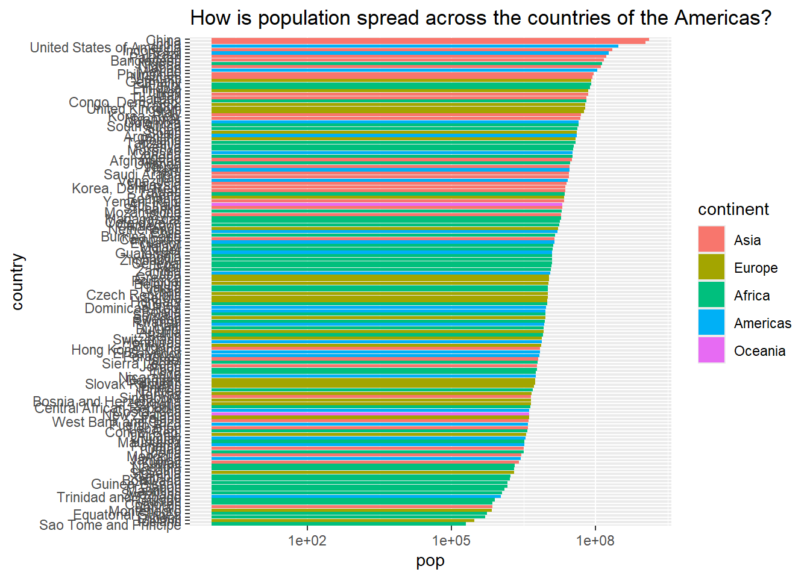
# Question 2
ggplot(C_mod, aes(continent, gdpPercap, colour = continent)) +
geom_violin() +
geom_jitter(width = 0.15) +
scale_y_log10() +
theme(legend.position = "none") +
labs(title = "How does GDP per capita vary per country across the Americas?")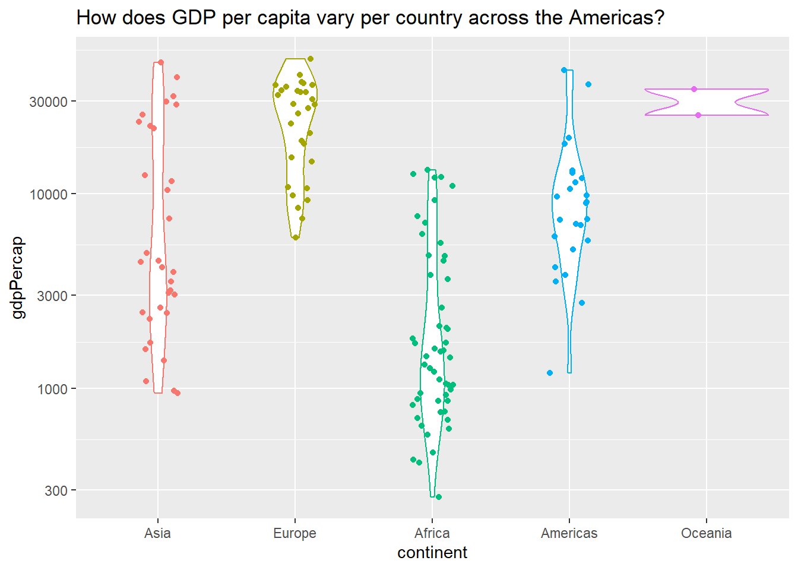
# Question 2
ggplot(C_mod, aes(continent, gdpPercap, colour = continent)) +
geom_boxplot() +
geom_jitter(width = 0.15) +
scale_y_log10() +
theme(legend.position = "none") +
labs(title = "How does GDP per capita vary per country across the Americas?")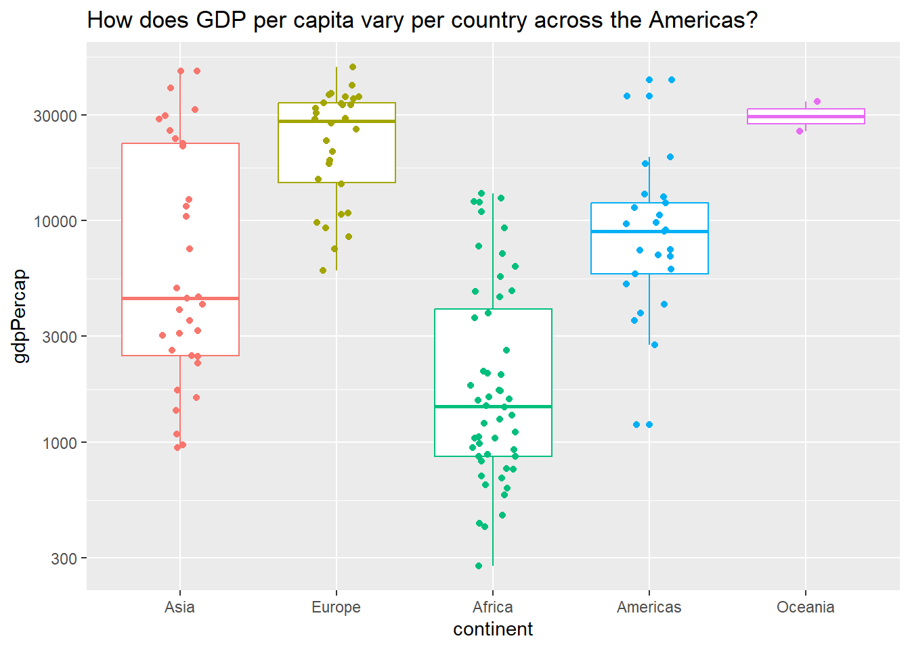
# Question 3
ggplot(C_mod, aes(gdpPercap, lifeExp, colour = continent)) +
geom_point() +
scale_x_log10() + # decompress the points squashed on the left of the graph
labs(title = "Are GDP per capita and life expectancy related?")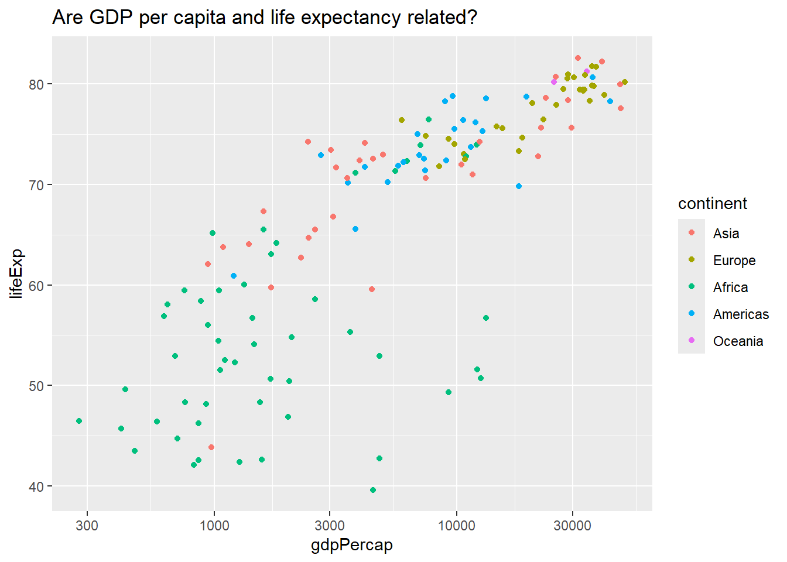
mosaic::cor.test(lifeExp ~ gdpPercap, data = C_mod) |> broom::tidy()# A tibble: 1 × 8
estimate statistic p.value parameter conf.low conf.high method alternative
<dbl> <dbl> <dbl> <int> <dbl> <dbl> <chr> <chr>
1 0.679 10.9 1.69e-20 140 0.579 0.759 Pearson'… two.sided # Question 4
C_mod |> gf_sf(geometry = ~ geometry, fill = ~ pop, color = ~ continent,
title = "Where do the most people live in the Americas?")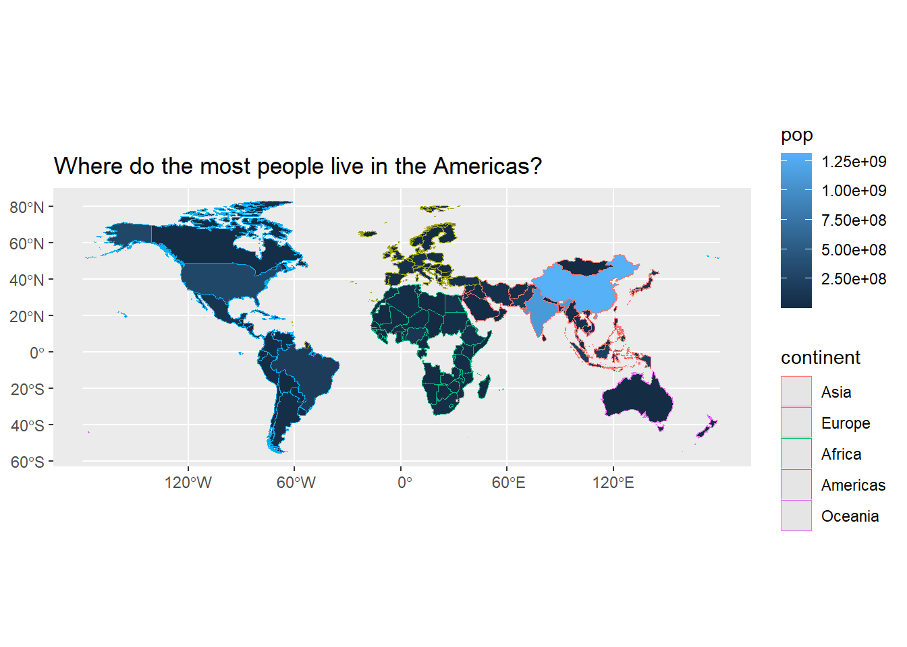
C_mod |> gf_sf(geometry = ~ geometry, fill = ~ lifeExp, color = ~ continent,
title = "Where is life expectancy highest in the Americas?")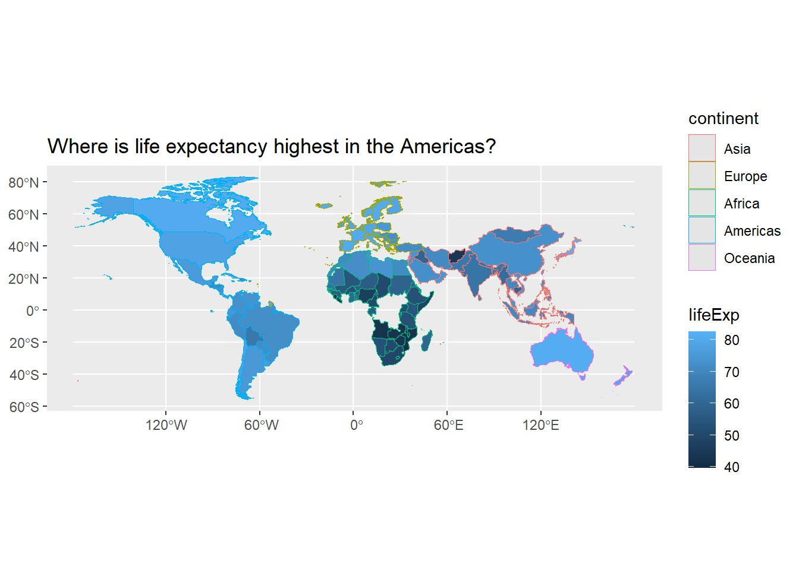
C_mod |> gf_sf(geometry = ~ geometry, fill = ~ gdpPercap, color = ~ continent,
title = "Where is GDP per capita highest in the Americas?")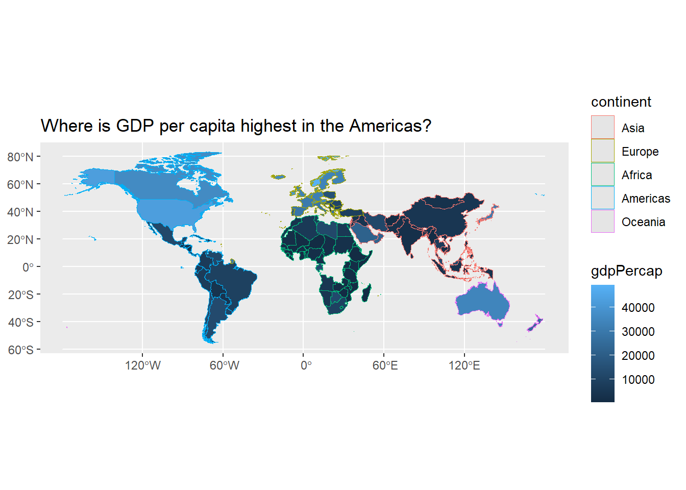
6. Say
Caption + one sentence we will stand behind.
- Population is very uneven: the United States (about 301 million) and Brazil (about 190 million) are far bigger than everyone else, while the middle country has only about 9.3 million people.
- Most countries of the Americas sit between about 5,700 and 12,000 dollars of
gdpPercap. The box plot alone hides the story, but the jitter shows two countries far above the rest, the United States (42,952) and Canada (36,319), and one far below, Haiti (1,202). - Across the 25 countries of the Americas,
lifeExpandgdpPercapare positively correlated (r = 0.59, p-value = 0.002). Haiti is the poorest country and also has the shortest life, at 60.9 years. - On the maps, the richest and longest-living countries are in the north (Canada and the United States). Our prediction was only half right: the biggest country is also the richest, but Brazil, the second biggest, is only in the middle for
gdpPercap.
7. Limit
What this panel cannot do.
- It doesn’t say why countries differ.
- It doesn’t show change over TIME, since there is only 2007.
- It doesn’t prove that money causes long life. Correlation is not causation.
- It only covers the Americas, so it cannot answer the “where in Africa” part of our spine.
Panel D — Erin Brockovich
Erin Brockovich in Hinkley, California: a hand-built plume of contaminated water and the homes of the families she met.
1. See the table
What is a case? Which columns are Quant / Qual? What is missing?
First, a base map pointed at Hinkley, so we can check we are in the right place. Esri.WorldImagery is satellite, so the PG&E site, streets and houses show up at zoom 14.
leaflet() |>
addProviderTiles("Esri.WorldImagery") |>
setView(lng = -117.2050, lat = 34.9360, zoom = 14)Tibble #1: the plume. Each row is one corner of the plume POLYGON. It starts at the PG&E tanks and runs about 1 mile southwards towards Hinkley.
plume <- tibble(
lng = c(-117.2135, -117.2095, -117.2040, -117.2030, -117.2090, -117.2160, -117.2165),
lat = c( 34.9460, 34.9460, 34.9380, 34.9270, 34.9230, 34.9290, 34.9390)
)
plume# A tibble: 7 × 2
lng lat
<dbl> <dbl>
1 -117. 34.9
2 -117. 34.9
3 -117. 34.9
4 -117. 34.9
5 -117. 34.9
6 -117. 34.9
7 -117. 34.9Tibble #2: the families. Each row (case) is one family’s home, as a POINT.
families <- tibble(
family = c("Jensen", "Robinson", "Irving", "Matthews", "Gomez"),
address = c("12 Mountain View Rd", "40 Acacia St", "7 Summerset Rd",
"88 Community Blvd", "25 Serra Rd"),
phone = c("555-0101", "555-0102", "555-0103", "555-0104", "555-0105"),
people = c(4, 3, 5, 2, 6),
illness = c("Breast cancer", "Tumours", "Nosebleeds", "Headaches", "Rashes"),
severity = c("High", "High", "Medium", "Low", "Medium"),
water_from = c("Well", "Well", "Well", "Well", "Well"),
signed_up = c("Yes", "Yes", "Yes", "No", "Yes"),
col = c("red", "red", "orange", "yellow", "orange"),
lng = c(-117.2100, -117.2075, -117.2120, -117.2060, -117.2135),
lat = c( 34.9400, 34.9350, 34.9310, 34.9260, 34.9290)
)
families# A tibble: 5 × 11
family address phone people illness severity water_from signed_up col lng
<chr> <chr> <chr> <dbl> <chr> <chr> <chr> <chr> <chr> <dbl>
1 Jensen 12 Mou… 555-… 4 Breast… High Well Yes red -117.
2 Robins… 40 Aca… 555-… 3 Tumours High Well Yes red -117.
3 Irving 7 Summ… 555-… 5 Nosebl… Medium Well Yes oran… -117.
4 Matthe… 88 Com… 555-… 2 Headac… Low Well No yell… -117.
5 Gomez 25 Ser… 555-… 6 Rashes Medium Well Yes oran… -117.
# ℹ 1 more variable: lat <dbl>My data has:
plume: 7 rows and 2 columns. Each row is one corner of the plume.families: 5 rows and 11 columns. Each row is one family’s home.family,address,phone: Qualitative, categorical. Encoded. One per family. illness: Qualitative, categorical. Encodedseverity: Qualitative, ordinal (“Low” < “Medium” < “High”). Encodedwater_from: Qualitative, categorical. Encoded. Every family drinks well water. signed_up: Qualitative, categorical (“Yes” / “No”). Did the family join the case against PG&E?col: the colour for eachseverity, used to colour the markers.people: Quantitative, numeric. How many people live in the home.lng,lat: Quantitative, numeric. Where the point is.
There is no missing data. Everything is made up by hand: the families, addresses, phone numbers and illnesses are hypothetical, and the coordinates are approximate.
2. Ask
One question this table can answer. One it cannot. Write both.
Possibly can answer:
- Which families live on top of the plume, and how sick are they? (Main Character Question)
Possibly cannot answer:
- Did the chromium in the water cause the illnesses? (No water tests or medical records)
- How did the plume grow over the years? (One snapshot only)
3. Choose a mark
Geom, map mark, or (later) test that matches the pair type. Name it before you code.
- Interactive map (
leaflet): plume asaddPolygons(), homes asaddCircleMarkers()coloured byseverity, with popups and a legend
4. Predict
What do we think we will see? One sentence, before Run.
I think the families closest to the PG&E tanks, in the middle of the plume, will have the most severe illnesses.
5. Make
Human brick first. Optional: one AI prompt, pasted below, only for what section 3 named.
Which families live on top of the plume, and how sick are they?
# Question 1
popup <- paste(
"<strong>", families$family, "</strong><br>",
families$address, "<br>",
"Phone: ", families$phone, "<br>",
"People at home: ", families$people, "<br>",
"Illness: ", families$illness, "<br>",
"Severity: ", families$severity, "<br>",
"Water from: ", families$water_from, "<br>",
"Signed up: ", families$signed_up, "<br>"
)
leaflet(data = families) |>
addProviderTiles("Esri.WorldImagery") |>
setView(lng = -117.2050, lat = 34.9360, zoom = 14) |>
# Tibble #1: the plume
addPolygons(
lng = plume$lng, lat = plume$lat,
color = "purple", weight = 2,
fill = TRUE, fillColor = "purple",
popup = "Contaminated groundwater plume"
) |>
# The PG&E tanks
addMarkers(
lng = -117.2115, lat = 34.9455,
label = "PG&E compressor station (tanks)",
labelOptions = labelOptions(noHide = TRUE, textOnly = FALSE, textsize = 14)
) |>
# Tibble #2: the families, coloured by severity
addCircleMarkers(
lng = ~lng, lat = ~lat,
radius = 8, # Pixels
color = families$col,
stroke = FALSE,
fillOpacity = 1,
label = families$family,
popup = popup
) |>
addLegend(
title = "Illness severity",
colors = c("red", "orange", "yellow"),
labels = c("High", "Medium", "Low")
)6. Say
Caption + one sentence we will stand behind.
Every family on the map lives on top of the plume and drinks well water. The two families closest to the PG&E tanks, the Jensens and the Robinsons, have the most severe illnesses, while the Matthews family, at the far southern tip of the plume, has the mildest.
7. Limit
What this panel cannot do.
- It isn’t proof that the chromium caused the illnesses.
- It doesn’t speak for the whole town (only 5 made-up families).
- It doesn’t show how the plume spread over TIME.
Panel E — Found Data
Authors: Shivgun, Ishita, Rachana
E <- read_csv("dataE/panel-E.csv")
h2 <- read_csv("dataE/hunch-2.csv")
h3 <- read_csv("dataE/hunch-3.csv") |>
janitor::clean_names() # makes every column name lower_case_with_underscores
h4 <- read_csv("dataE/hunch-4.csv")
h5 <- read_csv("dataE/hunch-5.csv")
# Hunch 6 is read from the Excel file, inside its own section belowHunch 1: AI Belief Among Art and Design Students
We collected data from across the Srishti Manipal campus. Our sample size for this was n = 60, which consisted of 30 art/BFA students and 30 design/BDes students, which included an equal number of boys and girls.
1. See the table
What is a case? Which columns are Quant / Qual? What is missing?
dplyr::glimpse(E)Rows: 60
Columns: 4
$ count <dbl> 1, 2, 3, 4, 5, 6, 7, 8, 9, 10, 11, 12, 13, 14, 15, 16, 17, 1…
$ gender <chr> "boy", "girl", "boy", "girl", "boy", "girl", "boy", "girl", …
$ program <chr> "art", "art", "design", "design", "art", "art", "design", "d…
$ AI_belief <chr> "no", "no", "yes", "yes", "yes", "yes", "yes", "yes", "yes",…My E data has:
- 60 observations and 4 variables. Each row (case) is one student.
count: Quantitative, numeric. Just the student’s number, 1 to 60, so we do not analyse it.program: Qualitative, categorical. Encoded, to be mutated gender: Qualitative, categorical. Encoded, to be mutated AI_belief: Qualitative, categorical. Encoded, to be mutated
skimr::skim(E)| Name | E |
| Number of rows | 60 |
| Number of columns | 4 |
| _______________________ | |
| Column type frequency: | |
| character | 3 |
| numeric | 1 |
| ________________________ | |
| Group variables | None |
Variable type: character
| skim_variable | n_missing | complete_rate | min | max | empty | n_unique | whitespace |
|---|---|---|---|---|---|---|---|
| gender | 0 | 1 | 3 | 4 | 0 | 2 | 0 |
| program | 0 | 1 | 3 | 6 | 0 | 2 | 0 |
| AI_belief | 0 | 1 | 2 | 3 | 0 | 2 | 0 |
Variable type: numeric
| skim_variable | n_missing | complete_rate | mean | sd | p0 | p25 | p50 | p75 | p100 | hist |
|---|---|---|---|---|---|---|---|---|---|---|
| count | 0 | 1 | 30.5 | 17.46 | 1 | 15.75 | 30.5 | 45.25 | 60 | ▇▇▇▇▇ |
Furthermore, on the Qual variables E data has :
genderhas 2 levels: “boy” (30) and “girl” (30)programhas 2 levels: “art” (30) and “design” (30)AI_beliefalso has 2 levels: “no” (32) and “yes” (28)
There is NO missing data. We are good to mutate.
AI <- E |>
mutate(
gender = as.factor(gender),
program = as.factor(program),
AI_belief = as.factor(AI_belief)
)
glimpse(AI)Rows: 60
Columns: 4
$ count <dbl> 1, 2, 3, 4, 5, 6, 7, 8, 9, 10, 11, 12, 13, 14, 15, 16, 17, 1…
$ gender <fct> boy, girl, boy, girl, boy, girl, boy, girl, boy, girl, boy, …
$ program <fct> art, art, design, design, art, art, design, design, art, art…
$ AI_belief <fct> no, no, yes, yes, yes, yes, yes, yes, yes, no, yes, no, no, …All ready now.
2. Ask
One question this table can answer. One it cannot. Write both.
Possibly can answer:
- Do design students have greater belief in AI compared to art students? (Main Character Question)
- Does it differ between boys and girls?
Possibly cannot answer:
- Why do students believe in AI or not? (We only asked yes / no)
3. Choose a mark
Geom, map mark, or (later) test that matches the pair type. Name it before you code.
- Mosaic Chart + Chi-Square Test
4. Predict
What do we think we will see? One sentence, before Run.
We think Design students are more likely to have a greater belief in AI compared to art students, and boys are more likely to have a greater belief than girls.
5. Make
Human brick first. Optional: one AI prompt, pasted below, only for what section 3 named.
# Question 1 and 2
vcd::structable(AI_belief ~ program + gender, data = AI) |>
vcd::mosaic(shade = TRUE, main = "Do design students believe in AI more than art students? Boys more than girls?")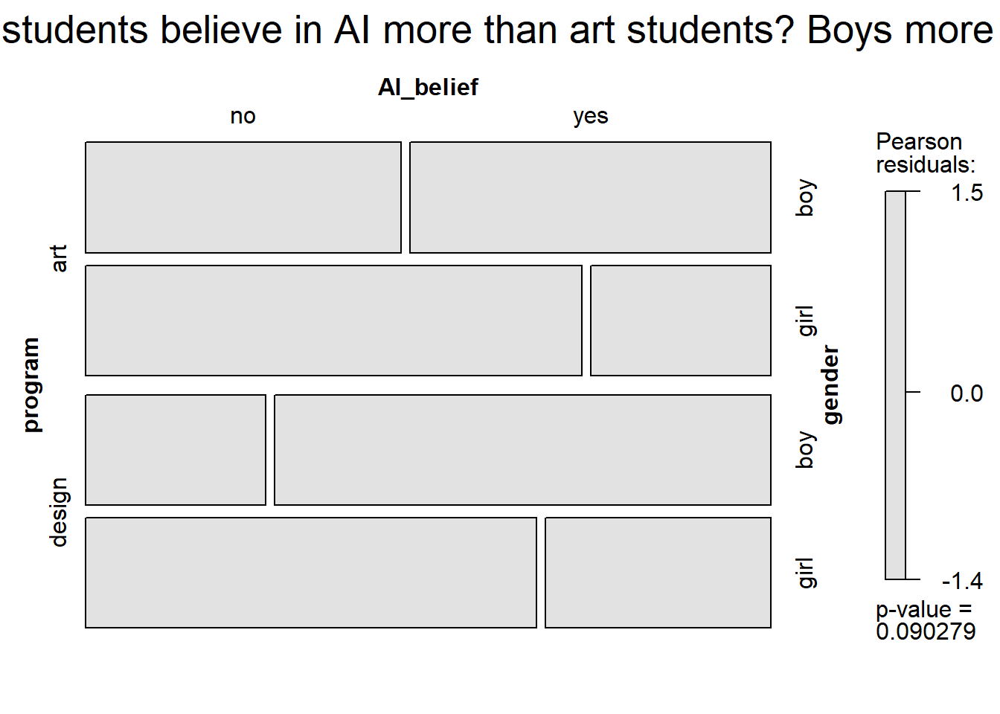
# Question 1
mosaic::xchisq.test(AI_belief ~ program, data = AI)
Pearson's Chi-squared test with Yates' continuity correction
data: x
X-squared = 0.60268, df = 1, p-value = 0.4376
18 14
(16.00) (16.00)
[0.14] [0.14]
< 0.50> <-0.50>
12 16
(14.00) (14.00)
[0.16] [0.16]
<-0.53> < 0.53>
key:
observed
(expected)
[contribution to X-squared]
<Pearson residual># Question 2
mosaic::xchisq.test(AI_belief ~ gender, data = AI)
Pearson's Chi-squared test with Yates' continuity correction
data: x
X-squared = 5.4241, df = 1, p-value = 0.01986
11 21
(16.00) (16.00)
[1.27] [1.27]
<-1.25> < 1.25>
19 9
(14.00) (14.00)
[1.45] [1.45]
< 1.34> <-1.34>
key:
observed
(expected)
[contribution to X-squared]
<Pearson residual>6. Say
Caption + one sentence we will stand behind.
Gender, not program, drives AI belief.
- Design students said yes a little more often than art students (16 of 30 vs 12 of 30), but the difference is not significant (X-squared = 0.60, p-value = 0.44).
- Boys believe significantly more than girls (19 of 30 boys vs 9 of 30 girls said yes, X-squared = 5.42, p-value = 0.02), regardless of whether they study art or design.
7. Limit
What this panel cannot do.
“Belief” means something different to each student. One person might say yes because AI exists and they use it daily; another might say no because they’re thinking about ethics or environmental cost.
Hunch 2: Allowance: Guys have more pocket money than Gals.
1. See the table
What is a case? Which columns are Quant / Qual? What is missing?
dplyr::glimpse(h2)Rows: 60
Columns: 3
$ respondent <dbl> 1, 2, 3, 4, 5, 6, 7, 8, 9, 10, 11, 12, 13, 14, 15, 16, 17, …
$ gender <chr> "M", "M", "M", "M", "M", "M", "M", "M", "M", "M", "M", "M",…
$ allowance <dbl> 5.0, 5.0, 5.0, 12.5, 10.0, 7.0, 5.0, 4.0, 13.0, 5.0, 4.0, 3…My h2 data has:
- 60 observations and 2 variables. Each row (case) is one student.
gender: Qualitative, categorical. Encoded, to be mutated allowance: Quantitative, numeric
skimr::skim(h2)| Name | h2 |
| Number of rows | 60 |
| Number of columns | 3 |
| _______________________ | |
| Column type frequency: | |
| character | 1 |
| numeric | 2 |
| ________________________ | |
| Group variables | None |
Variable type: character
| skim_variable | n_missing | complete_rate | min | max | empty | n_unique | whitespace |
|---|---|---|---|---|---|---|---|
| gender | 0 | 1 | 1 | 1 | 0 | 2 | 0 |
Variable type: numeric
| skim_variable | n_missing | complete_rate | mean | sd | p0 | p25 | p50 | p75 | p100 | hist |
|---|---|---|---|---|---|---|---|---|---|---|
| respondent | 0 | 1 | 30.50 | 17.46 | 1 | 15.75 | 30.5 | 45.25 | 60 | ▇▇▇▇▇ |
| allowance | 0 | 1 | 6.22 | 5.26 | 1 | 4.00 | 5.0 | 7.12 | 40 | ▇▂▁▁▁ |
Furthermore, on the Qual variables h2 data has :
genderhas 2 levels
And on the Quant variables h2 data has :
allowancehas a mean of 6.225, sd of 5.25, median of 5, min of 1, and max of 40
There is NO missing data. We are good to mutate.
allowance <- h2 |>
mutate(gender = as.factor(gender))
glimpse(allowance)Rows: 60
Columns: 3
$ respondent <dbl> 1, 2, 3, 4, 5, 6, 7, 8, 9, 10, 11, 12, 13, 14, 15, 16, 17, …
$ gender <fct> M, M, M, M, M, M, M, M, M, M, M, M, M, M, M, M, M, M, M, M,…
$ allowance <dbl> 5.0, 5.0, 5.0, 12.5, 10.0, 7.0, 5.0, 4.0, 13.0, 5.0, 4.0, 3…All ready now.
2. Ask
One question this table can answer. One it cannot. Write both.
Possibly can answer:
- Do guys have more pocket money allowance than girls? (Main Character Question)
Possibly cannot answer:
- Why does one student get more pocket money than another? (No data on family income or city)
3. Choose a mark
Geom, map mark, or (later) test that matches the pair type. Name it before you code.
- Density plot, Box Plot + Stat Test For Means
4. Predict
What do we think we will see? One sentence, before Run.
Guys are more likely to have greater pocket money allowance than girls.
5. Make
Human brick first. Optional: one AI prompt, pasted below, only for what section 3 named.
# Question 1
allowance |> gf_density(~ allowance, fill = ~ gender, alpha = 0.5, title = "Do guys have more pocket money allowance than girls?")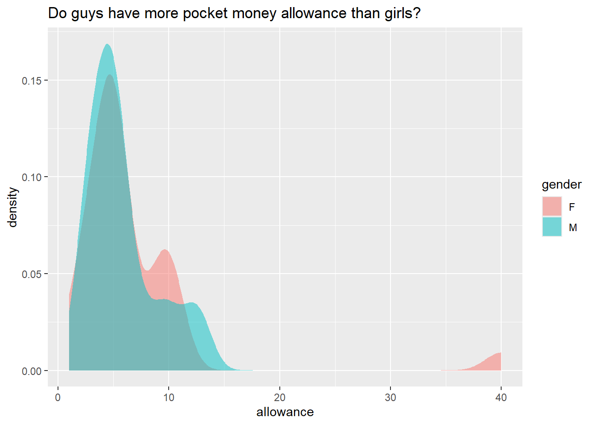
allowance |> gf_boxplot(allowance ~ gender, fill = ~ gender, title = "Do guys have more pocket money allowance than girls?")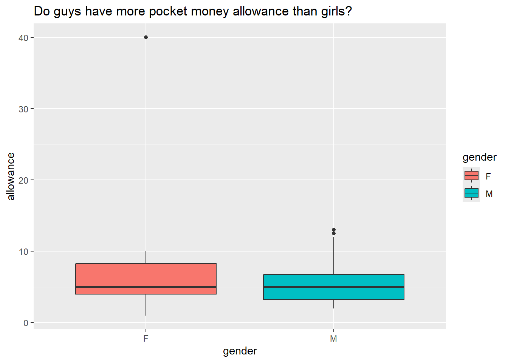
# Question 1
mosaic::t_test(allowance ~ gender, data = allowance)
Welch Two Sample t-test
data: allowance by gender
t = 0.69647, df = 40.296, p-value = 0.4901
alternative hypothesis: true difference in means between group F and group M is not equal to 0
95 percent confidence interval:
-1.806154 3.706154
sample estimates:
mean in group F mean in group M
6.70 5.75 6. Say
Caption + one sentence we will stand behind.
Contrary to our prediction, girls in our sample report a slightly higher pocket money allowance than boys, but the difference is not statistically significant (t = , p-value = ). (fill in from the t-test output)
7. Limit
What this panel cannot do.
One girl reported an unusually high allowance of around 40k, which likely pulls the female mean up.
Hunch 3: MBTI: I am an INFP.
1. See the table
What is a case? Which columns are Quant / Qual? What is missing?
dplyr::glimpse(h3)Rows: 60
Columns: 4
$ sno <dbl> 1, 2, 3, 4, 5, 6, 7, 8, 9, 10, 11, 12, 13, 14, 15, …
$ department <chr> "SMI", "SMI", "SMI", "SMI", "SMI", "SMI", "SMI", "S…
$ mbti_type <chr> "ENTP", "INTJ", "INFP", "INTP", "INFP", "INFP", "IS…
$ social_orientation <chr> "E", "I", "I", "I", "I", "I", "I", "I", "I", "E", "…My h3 data has:
- 60 observations and 3 variables. Each row (case) is one student.
department: Qualitative, categorical. Encoded, to be mutated mbti_type: Qualitative, categorical. Encoded, to be mutated social_orientation: Qualitative, categorical. Encoded, to be mutated
(We read the file with janitor::clean_names(), so whatever the column names were in the csv, they are now department, mbti_type and social_orientation.)
skimr::skim(h3)| Name | h3 |
| Number of rows | 60 |
| Number of columns | 4 |
| _______________________ | |
| Column type frequency: | |
| character | 3 |
| numeric | 1 |
| ________________________ | |
| Group variables | None |
Variable type: character
| skim_variable | n_missing | complete_rate | min | max | empty | n_unique | whitespace |
|---|---|---|---|---|---|---|---|
| department | 0 | 1 | 3 | 3 | 0 | 2 | 0 |
| mbti_type | 0 | 1 | 4 | 4 | 0 | 14 | 0 |
| social_orientation | 0 | 1 | 1 | 1 | 0 | 2 | 0 |
Variable type: numeric
| skim_variable | n_missing | complete_rate | mean | sd | p0 | p25 | p50 | p75 | p100 | hist |
|---|---|---|---|---|---|---|---|---|---|---|
| sno | 0 | 1 | 30.5 | 17.46 | 1 | 15.75 | 30.5 | 45.25 | 60 | ▇▇▇▇▇ |
Furthermore, on the Qual variables h3 data has :
departmenthas 2 levels: MIT and SMImbti_typehas 14 levelssocial_orientationhas 2 levels
There is NO missing data. We are good to mutate.
mbti <- h3 |>
mutate(across(where(is.character), as.factor))
glimpse(mbti)Rows: 60
Columns: 4
$ sno <dbl> 1, 2, 3, 4, 5, 6, 7, 8, 9, 10, 11, 12, 13, 14, 15, …
$ department <fct> SMI, SMI, SMI, SMI, SMI, SMI, SMI, SMI, SMI, SMI, S…
$ mbti_type <fct> ENTP, INTJ, INFP, INTP, INFP, INFP, ISFP, INFJ, INF…
$ social_orientation <fct> E, I, I, I, I, I, I, I, I, E, E, E, I, E, I, E, E, …All ready now.
2. Ask
One question this table can answer. One it cannot. Write both.
Possibly can answer:
- Does personality type differ between MIT and SMI students? (Main Character Question)
- Are SMI students more introverted than MIT students?
Possibly cannot answer:
- Does studying at SMI make a student introverted? (We only see one moment, not before and after)
3. Choose a mark
Geom, map mark, or (later) test that matches the pair type. Name it before you code.
- Bar graph
- Bar graph as proportions + Chi-Square Test
4. Predict
What do we think we will see? One sentence, before Run.
SMI students are more likely to be introverted than MIT students.
5. Make
Human brick first. Optional: one AI prompt, pasted below, only for what section 3 named.
# Question 1
mbti |> gf_bar(~ mbti_type, fill = ~ department, position = "dodge", title = "Does personality type differ between MIT and SMI students?") |>
gf_refine(coord_flip()) # 14 types, so flip the bars to keep the labels readable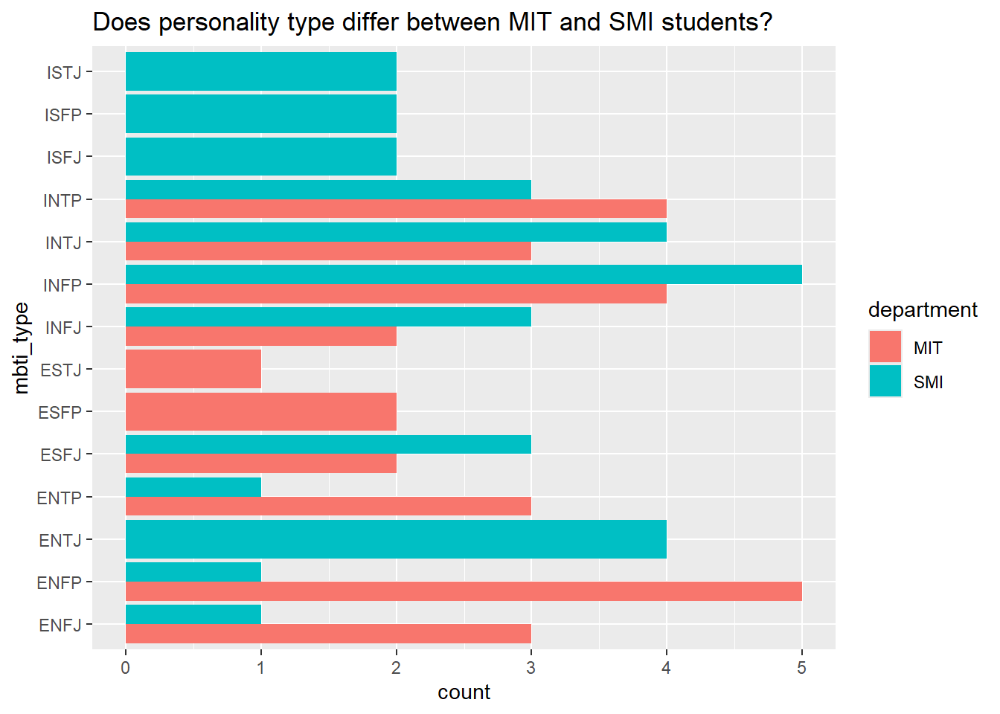
# Question 2
mbti |> gf_bar(~ department, fill = ~ social_orientation, position = "fill", title = "Are SMI students more introverted than MIT students?")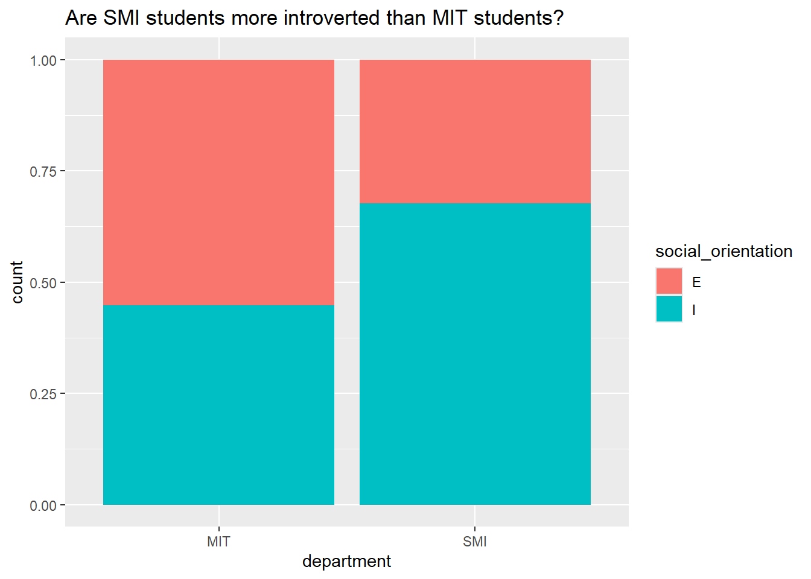
mosaic::xchisq.test(social_orientation ~ department, data = mbti)
Pearson's Chi-squared test with Yates' continuity correction
data: x
X-squared = 2.3386, df = 1, p-value = 0.1262
16 10
(12.57) (13.43)
[0.68] [0.64]
< 0.97> <-0.94>
13 21
(16.43) (17.57)
[0.52] [0.49]
<-0.85> < 0.82>
key:
observed
(expected)
[contribution to X-squared]
<Pearson residual>6. Say
Caption + one sentence we will stand behind.
- The most common MBTI types are ___ for SMI and ___ for MIT. (fill in from the Question 1 bar graph)
- SMI students are ___ introverted than MIT students (X-squared = , p-value ). (fill in from the Question 2 chi-square output: if p < 0.05 the difference is significant, if not, it is not)
7. Limit
What this panel cannot do.
- MBTI is self-reported, and the same person can get a different type on another day.
- With 14 types and only 60 students, most types have just a few people, so we cannot compare single types fairly.
Hunch 4: Are SMI Students More Likely to Be in a Relationship?
1. See the table
What is a case? Which columns are Quant / Qual? What is missing?
dplyr::glimpse(h4)Rows: 60
Columns: 3
$ respondants <dbl> 1, 2, 3, 4, 5, 6, 7, 8, 9, 10, 11, 12, 13, 14, 15,…
$ department <chr> "SMI", "SMI", "SMI", "SMI", "SMI", "SMI", "SMI", "…
$ relationship_status <chr> "No", "Yes", "No", "No", "No", "No", "Yes", "Yes",…My h4 data has:
- 60 observations. Each row (case) is one student.
department: Qualitative, categorical. Encoded, to be mutated relationship_status: Qualitative, categorical. Encoded, to be mutated
skimr::skim(h4)| Name | h4 |
| Number of rows | 60 |
| Number of columns | 3 |
| _______________________ | |
| Column type frequency: | |
| character | 2 |
| numeric | 1 |
| ________________________ | |
| Group variables | None |
Variable type: character
| skim_variable | n_missing | complete_rate | min | max | empty | n_unique | whitespace |
|---|---|---|---|---|---|---|---|
| department | 0 | 1 | 3 | 3 | 0 | 2 | 0 |
| relationship_status | 0 | 1 | 2 | 3 | 0 | 2 | 0 |
Variable type: numeric
| skim_variable | n_missing | complete_rate | mean | sd | p0 | p25 | p50 | p75 | p100 | hist |
|---|---|---|---|---|---|---|---|---|---|---|
| respondants | 0 | 1 | 30.5 | 17.46 | 1 | 15.75 | 30.5 | 45.25 | 60 | ▇▇▇▇▇ |
Furthermore, on the Qual variables h4 data has :
departmenthas 2 levels: SMI and MITrelationship_statushas 2 levels: Yes and No
There is NO missing data. We are good to mutate.
bfgf <- h4 |>
mutate(across(where(is.character), as.factor))
glimpse(bfgf)Rows: 60
Columns: 3
$ respondants <dbl> 1, 2, 3, 4, 5, 6, 7, 8, 9, 10, 11, 12, 13, 14, 15,…
$ department <fct> SMI, SMI, SMI, SMI, SMI, SMI, SMI, SMI, SMI, SMI, …
$ relationship_status <fct> No, Yes, No, No, No, No, Yes, Yes, No, Yes, No, No…All ready now.
2. Ask
One question this table can answer. One it cannot. Write both.
Possibly can answer:
- Are SMI (art and design) students more likely to be in a relationship than MIT (engineering) students? (Main Character Question)
Possibly cannot answer:
- Why are some students in a relationship and others not? (We only asked yes / no)
3. Choose a mark
Geom, map mark, or (later) test that matches the pair type. Name it before you code.
- Bar chart as proportions, Mosaic Chart + Chi-Square Test
4. Predict
What do we think we will see? One sentence, before Run.
SMI students are more likely to be in a relationship (or a situationship) than MIT students.
5. Make
Human brick first. Optional: one AI prompt, pasted below, only for what section 3 named.
# Question 1
bfgf |> gf_bar(~ department, fill = ~ relationship_status, position = "fill") |>
gf_labs(title = "Are SMI students more likely to be in a relationship than MIT students?",
y = "Proportion of students")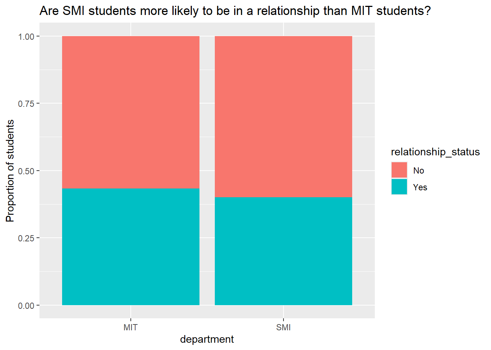
vcd::structable(relationship_status ~ department, data = bfgf) |>
vcd::mosaic(shade = TRUE, main = "Relationship status by department")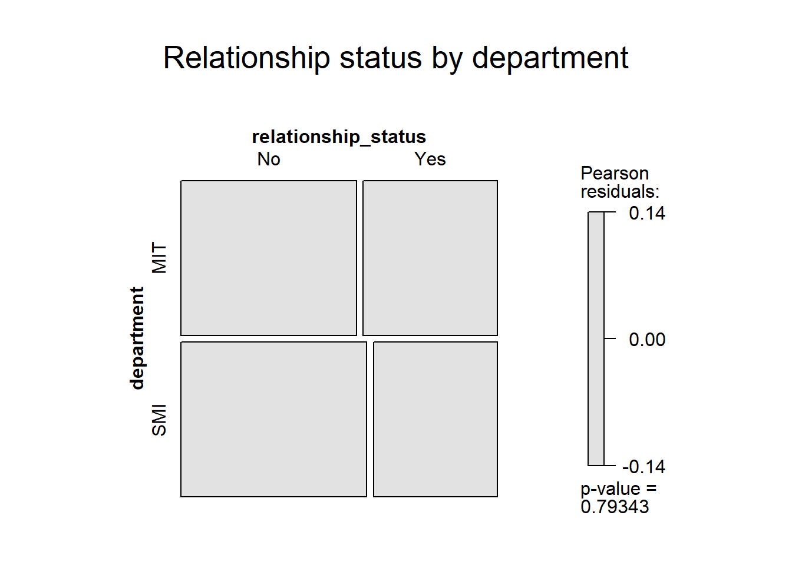
# Question 1
mosaic::xchisq.test(relationship_status ~ department, data = bfgf)
Pearson's Chi-squared test with Yates' continuity correction
data: x
X-squared = 0, df = 1, p-value = 1
17 18
(17.50) (17.50)
[0.00] [0.00]
<-0.12> < 0.12>
13 12
(12.50) (12.50)
[0.00] [0.00]
< 0.14> <-0.14>
key:
observed
(expected)
[contribution to X-squared]
<Pearson residual>6. Say
Caption + one sentence we will stand behind.
The romantic art student is a myth, at least on our campus.
12 SMI students and 13 MIT students said yes, almost identical. The test confirms there is no real difference (p = 1).
7. Limit
What this panel cannot do.
A one-person difference between 12 and 13 means nothing statistically. “Relationship” was also left undefined, so some students may have counted situationships and others may not.
Hunch 5: Do Tattoos Make People Look More Attractive?
1. See the table
What is a case? Which columns are Quant / Qual? What is missing?
dplyr::glimpse(h5)Rows: 60
Columns: 4
$ Respondents <dbl> 1, 2, 3, 4, 5, 6, 7, 8, 9, 10, 11, 12, 13, 14, 15, 16, 17,…
$ Gender <chr> "M", "M", "M", "M", "M", "M", "M", "M", "M", "M", "M", "M"…
$ Has_tattoos <chr> "yes", "no", "yes", "no", "no", "yes", "no", "yes", "no", …
$ Opinion <chr> "yes", "yes", "no", "yes", "no", "yes", "yes", "yes", "no"…My h5 data has:
- 60 observations and 4 variables. Each row (case) is one student.
Respondents: Quantitative, numeric. Just the student’s number, so we do not analyse it.Gender: Qualitative, categorical. Encoded, to be mutated `Has_tattoos?`: Qualitative, categorical. Encoded, to be mutated Opinion: Qualitative, categorical. Encoded, to be mutated. Does this person find tattoos attractive?
skimr::skim(h5)| Name | h5 |
| Number of rows | 60 |
| Number of columns | 4 |
| _______________________ | |
| Column type frequency: | |
| character | 3 |
| numeric | 1 |
| ________________________ | |
| Group variables | None |
Variable type: character
| skim_variable | n_missing | complete_rate | min | max | empty | n_unique | whitespace |
|---|---|---|---|---|---|---|---|
| Gender | 0 | 1 | 1 | 1 | 0 | 2 | 0 |
| Has_tattoos | 0 | 1 | 2 | 3 | 0 | 2 | 0 |
| Opinion | 0 | 1 | 2 | 3 | 0 | 2 | 0 |
Variable type: numeric
| skim_variable | n_missing | complete_rate | mean | sd | p0 | p25 | p50 | p75 | p100 | hist |
|---|---|---|---|---|---|---|---|---|---|---|
| Respondents | 0 | 1 | 30.5 | 17.46 | 1 | 15.75 | 30.5 | 45.25 | 60 | ▇▇▇▇▇ |
Furthermore, on the Qual variables h5 data has :
Genderhas 2 levels: M and FHas_tattoos?has 2 levels: yes and noOpinionhas 2 levels: yes and no
There is NO missing data. The ? in Has_tattoos? makes the name awkward to type, so we rename it to Has_tattoos while we mutate.
tto <- h5 |>
mutate(across(where(is.character), as.factor))
glimpse(tto)Rows: 60
Columns: 4
$ Respondents <dbl> 1, 2, 3, 4, 5, 6, 7, 8, 9, 10, 11, 12, 13, 14, 15, 16, 17,…
$ Gender <fct> M, M, M, M, M, M, M, M, M, M, M, M, M, M, M, M, M, M, M, M…
$ Has_tattoos <fct> yes, no, yes, no, no, yes, no, yes, no, yes, no, yes, no, …
$ Opinion <fct> yes, yes, no, yes, no, yes, yes, yes, no, yes, yes, no, ye…All ready now.
2. Ask
One question this table can answer. One it cannot. Write both.
Possibly can answer:
- Do people with tattoos find tattoos more attractive? (Main Character Question)
- Does this differ by gender?
Possibly cannot answer:
- Which kind of tattoo do people find attractive? (We only asked yes / no)
3. Choose a mark
Geom, map mark, or (later) test that matches the pair type. Name it before you code.
- Bar chart as proportions, Mosaic Chart + Chi-Square Test
4. Predict
What do we think we will see? One sentence, before Run.
People with tattoos will find tattoos more attractive, and girls more than boys.
5. Make
Human brick first. Optional: one AI prompt, pasted below, only for what section 3 named.
# Question 1 and 2
tto |> gf_bar(~ Has_tattoos, fill = ~ Opinion, position = "fill") |>
gf_facet_wrap(~ Gender) |>
gf_labs(title = "Finds tattoos attractive, by tattoo status and gender",
x = "Has a tattoo", y = "Proportion of students")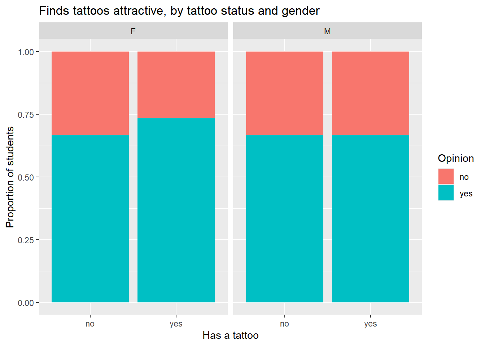
vcd::structable(Opinion ~ Has_tattoos + Gender, data = tto) |>
vcd::mosaic(shade = TRUE, main = "Do people with tattoos find tattoos more attractive?")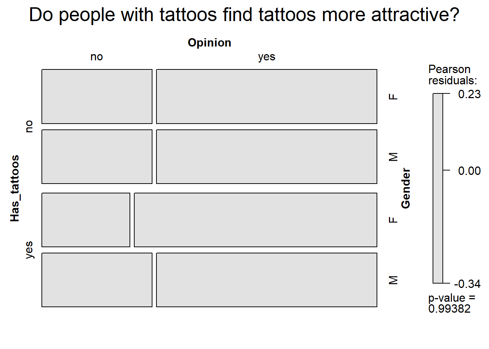
# Question 1
mosaic::xchisq.test(Opinion ~ Has_tattoos, data = tto)
Pearson's Chi-squared test with Yates' continuity correction
data: x
X-squared = 0, df = 1, p-value = 1
10 9
( 9.50) ( 9.50)
[0.00] [0.00]
< 0.16> <-0.16>
20 21
(20.50) (20.50)
[0.00] [0.00]
<-0.11> < 0.11>
key:
observed
(expected)
[contribution to X-squared]
<Pearson residual># Question 2
mosaic::xchisq.test(Opinion ~ Gender, data = tto)
Pearson's Chi-squared test with Yates' continuity correction
data: x
X-squared = 0, df = 1, p-value = 1
9 10
( 9.50) ( 9.50)
[0.00] [0.00]
<-0.16> < 0.16>
21 20
(20.50) (20.50)
[0.00] [0.00]
< 0.11> <-0.11>
key:
observed
(expected)
[contribution to X-squared]
<Pearson residual>6. Say
Caption + one sentence we will stand behind.
Having a tattoo doesn’t change what you think of them.
Opinions on tattoo attractiveness are almost exactly the same across genders and between people with and without tattoos (p = 1 for both).
7. Limit
What this panel cannot do.
“Attractive” is a single yes/no, which hides nuance: someone may like small tattoos but not face tattoos. The sample is also just 60 students from one campus, so it can’t stand in for young people in general.
Hunch 6: TV Shows: Modern Family is the favourite.
1. See the table
What is a case? Which columns are Quant / Qual? What is missing?
h6 <- readxl::read_excel("dataE/FOSEDA Panel E data.xlsx",
col_types = c("numeric", "date", "date", "date")) |>
janitor::clean_names()
glimpse(h6) # Check what is happeningRows: 69
Columns: 4
$ students <dbl> 1, 2, 3, 4, 5, 6, 7, 8, 9, 10, 11, 12, 13, 14, 15, 16, 1…
$ friends <dttm> 2026-10-07, 2026-10-07, 2026-10-07, NA, 2026-10-10, 202…
$ house <dttm> NA, NA, NA, NA, NA, NA, NA, NA, 2026-10-06, 2026-10-08,…
$ modern_family <dttm> 2026-10-09, NA, 2026-10-08, 2026-10-06, 2026-10-07, 202…My h6 data has:
- 69 observations and 4 variables. Each row (case) is one student.
students: Quantitative, numeric. Just the student’s number.friends,house,modern_family: each student’s score for that show. Excel stored the scores as dates, so the score is hiding in the day of the date. We pull it out with lubridate::day().
Then we pivot_longer() the three show columns into two: show (Qual) and scores (Quant), so that each row is one student’s score for one show.
h6_mod <- h6 |>
mutate(
friends = lubridate::day(friends) |> as.numeric(),
house = lubridate::day(house) |> as.numeric(),
modern_family = lubridate::day(modern_family) |> as.numeric()
) |>
tidyr::pivot_longer(c(-students), names_to = "show", values_to = "scores") |>
mutate(show = as.factor(show))
glimpse(h6_mod)Rows: 207
Columns: 3
$ students <dbl> 1, 1, 1, 2, 2, 2, 3, 3, 3, 4, 4, 4, 5, 5, 5, 6, 6, 6, 7, 7, 7…
$ show <fct> friends, house, modern_family, friends, house, modern_family,…
$ scores <dbl> 7, NA, 9, 7, NA, NA, 7, NA, 8, NA, NA, 6, 10, NA, 7, 10, NA, …skimr::skim(h6_mod)| Name | h6_mod |
| Number of rows | 207 |
| Number of columns | 3 |
| _______________________ | |
| Column type frequency: | |
| factor | 1 |
| numeric | 2 |
| ________________________ | |
| Group variables | None |
Variable type: factor
| skim_variable | n_missing | complete_rate | ordered | n_unique | top_counts |
|---|---|---|---|---|---|
| show | 0 | 1 | FALSE | 3 | fri: 69, hou: 69, mod: 69 |
Variable type: numeric
| skim_variable | n_missing | complete_rate | mean | sd | p0 | p25 | p50 | p75 | p100 | hist |
|---|---|---|---|---|---|---|---|---|---|---|
| students | 0 | 1.00 | 35.17 | 20.22 | 1 | 18 | 35 | 52 | 70 | ▇▇▇▇▇ |
| scores | 68 | 0.67 | 7.43 | 1.79 | 2 | 7 | 8 | 9 | 10 | ▁▁▂▇▅ |
Furthermore, after the pivot h6_mod has :
show: Qualitative, 3 levels: “friends”, “house” and “modern_family”scores: Quantitative, numeric. Mean , sd , min , max (fill in fromskim())
Missing data: YES. Many students had not watched or rated every show, especially House, so scores has ___ missing values. (fill in from the n_missing column of skim()) We drop them before the ANOVA.
tvshows_clean <- h6_mod |> filter(!is.na(scores))All ready now.
2. Ask
One question this table can answer. One it cannot. Write both.
Possibly can answer:
- Which show do students rate highest: Friends, House or Modern Family? (Main Character Question)
- Which pairs of shows are rated differently?
Possibly cannot answer:
- Why do students like one show more than another? (We only have a score)
3. Choose a mark
Geom, map mark, or (later) test that matches the pair type. Name it before you code.
- Density plot, Box Plot + ANOVA
- Pairwise comparison plot
4. Predict
What do we think we will see? One sentence, before Run.
Modern Family will be rated the highest of the three shows.
5. Make
Human brick first. Optional: one AI prompt, pasted below, only for what section 3 named.
# Question 1
tvshows_clean |> gf_density(~ scores, fill = ~ show, alpha = 0.5, title = "Which show do students rate highest?")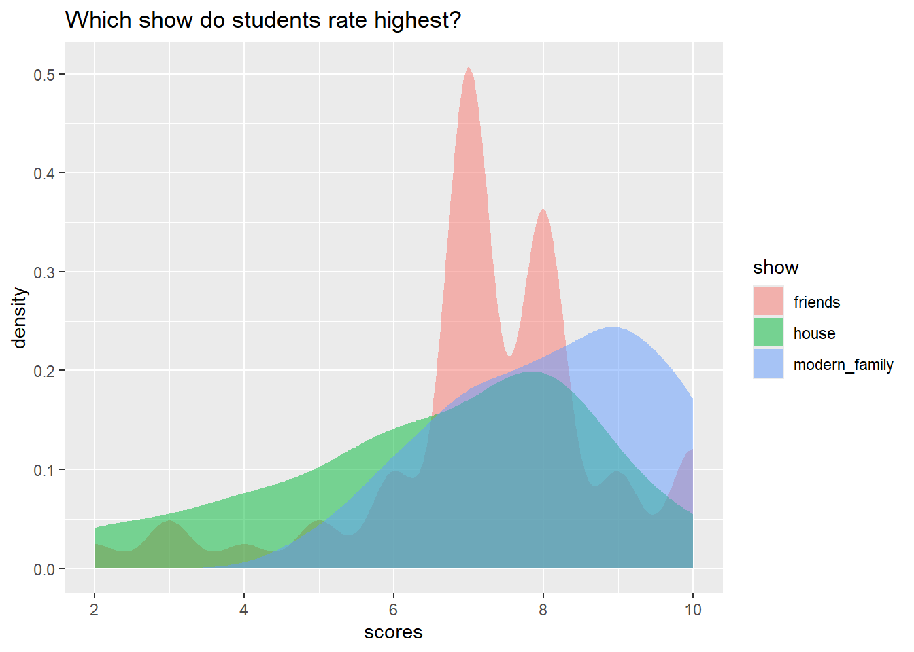
tvshows_clean |> gf_boxplot(scores ~ show, fill = ~ show, title = "Which show do students rate highest?")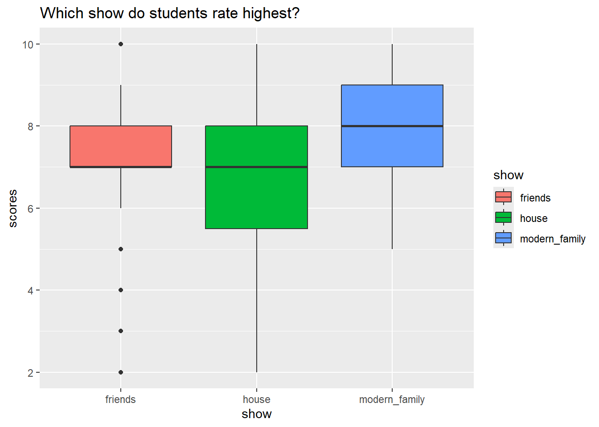
# Question 1
aov(scores ~ show, data = tvshows_clean) |> supernova::supernova() Analysis of Variance Table (Type III SS)
Model: scores ~ show
SS df MS F PRE p
----- --------------- | ------- --- ------ ----- ----- -----
Model (error reduced) | 48.795 2 24.398 8.436 .1104 .0004
Error (from model) | 393.306 136 2.892
----- --------------- | ------- --- ------ ----- ----- -----
Total (empty model) | 442.101 138 3.204 # Question 2
aov(scores ~ show, data = tvshows_clean) |> supernova::pairwise(plot = TRUE)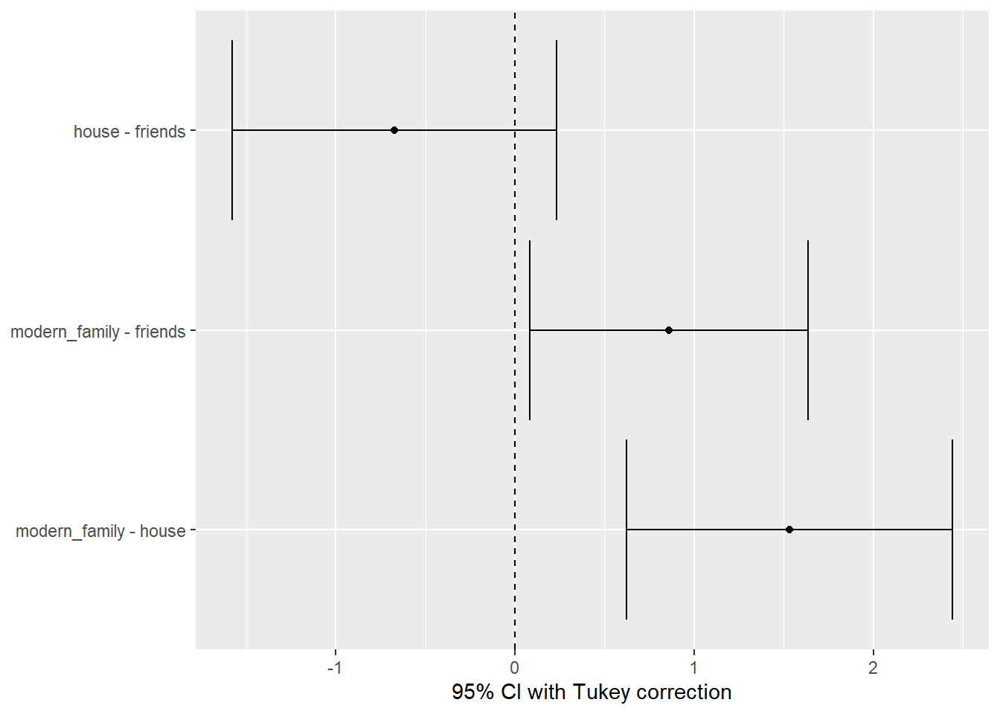
── Tukey's Honestly Significant Differences ────────────────────────────────────Model: scores ~ showshowLevels: 3Family-wise error-rate: 0.05
group_1 group_2 diff pooled_se q df lower upper p_adj
<chr> <chr> <dbl> <dbl> <dbl> <int> <dbl> <dbl> <dbl>
1 house friends -0.674 0.270 -2.495 136 -1.579 0.231 .1855
2 modern_family friends 0.859 0.231 3.710 136 0.083 1.634 .0261
3 modern_family house 1.533 0.272 5.637 136 0.621 2.444 .00036. Say
Caption + one sentence we will stand behind.
Modern Family was rated the highest overall, as we predicted, with ratings clustering around 8-9, while House had the most spread with people either loving it or not. The ANOVA confirms these differences are real and not just chance (F = 8.44, p = 0.0004).
The pairwise comparison further revealed that Modern Family was rated significantly higher than both Friends and House. However, there was no statistically significant difference between Friends and House.
This suggests that Modern Family was the clear favourite among the students who rated these shows, supporting our hunch.
7. Limit
What this panel cannot do.
In this dataset, there were a lot of missing values (NA), since not many people had watched/rated House. In an ideal study, all the people within the sample should have watched all the shows, Friends, House and Modern Family.
Conclusion
- The question we will defend in ninety seconds: Who arrives in acute coronary crisis, which habits travel with that crisis, and where is life short? Panels A and B answer the first two with the patients’ bodies and habits, and Panel C shows that in the Americas, richer countries live longer (r = 0.59).
- What we will not claim: that smoking, obesity or cholesterol cause a crisis, that money causes long life, or that chromium caused the illnesses in Hinkley. Nothing here was an experiment.
- Limits: one snapshot in time, patients who already arrived in crisis, the Americas instead of Africa in Panel C, made-up families in Panel D, and small, self-reported campus samples (n = 60 to 69) in Panel E.